SICP
Table of Contents
SICP
This article was written using Emacs in Org mode, then exported to Texinfo format, and finally to HTML.
Here are some useful links:
1 Building Abstractions with Procedures
- What is the relationship between computational process, data and program?
Computational processes are abstract beings that inhabit computers. As they evolve, processes manipulate other abstract things called data. The evolution of a process is directed by a pattern of rules called a program. People create programs to direct processes.
- What is Lisp interpreter?
A Lisp interpreter is a machine that carries out processes described in the Lisp language.
- If Lisp is not a mainstream language, why are we using it as the framework for our discussion of programming?
Because the language possesses unique features that make it an excellent medium for studying important programming constructs and data structures and for relating them to the linguistic features that support them. The most significant of these features is the fact that Lisp descriptions of processes, called procedures, can themselves be represented and manipulated as Lisp data.
1.1 Elements of Programming
- What mechanisms does a powerful language have for combining simple ideas to form more complex ideas?
- primitive expressions, which represent the simplest entities the language is concerned with, e.g.
123.
- means of combination, by which compound elements are built from simpler ones, e.g.
(+ 1 23).
- means of abstraction, by which compound elements can be named and manipulated as units.
1.1.1 Expressions
- combinations
Expressions formed by delimiting a list of expressions within parentheses in order to denote procedure application. The leftmost element in the list is called the operator, and the other elements are called operands. The value of a combination is obtained by applying the procedure specified by the operator to the arguments that are the values of the operands.
- prefix notation
The convention of placing the operator to the left of the operands.
1.1.2 Naming and the Environment
1.1.3 Evaluating Combinations
- How to evaluate a combination?
- Evaluate the subexpressions of the combination.
- Apply the procedure that is the value of the leftmost subexpression (the operator) to the arguments that are the values of the other subexpressions (the operands).
- special forms
Evaluating (define x 3) does not apply define to two arguments, since the purpose of the define is precisely to associate x with a value. (That is, (define x 3) is not a combination.) Such exceptions to the general evaluation rule are called special forms. Each special form has its own evaluation rule. The various kinds of expressions (each with its associated evaluation rule) constitute the syntax of the programming language.
1.1.4 Compound Procedures
- procedure definitions
A much more powerful abstraction technique by which a compound operation can be given a name and then referred to as a unit.
1.1.5 The Substitution Model for Procedure Application
- applicative order
First evaluates the operator and operands and then applies the resulting procedure to the resulting arguments.
- normal order
Would not evaluate the operands until their values were needed. Instead it would first substitute operand expressions for parameters until it obtained an expression involving only primitive operators, and would then perform the evaluation.
1.1.6 Conditional Expressions and Predicates
- What’s the difference between if and cond?
The ⟨e⟩ part of each cond clause may be a sequence of expressions. If the corresponding ⟨p⟩ is found to be true, the expressions ⟨e⟩ are evaluated in sequence and the value of the final expression in the sequence is returned as the value of the cond. In an if expression, however, the ⟨consequent⟩ and ⟨alternative⟩ must be single expressions.
- Exercise 1.1
Below is a sequence of expressions. What is the result printed by the interpreter in response to each expression? Assume that the sequence is to be evaluated in the order in which it is presented.
10
(+ 5 3 4)
(- 9 1)
(/ 6 2)
(+ (* 2 4) (- 4 6))
(define a 3)
(define b (+ a 1))
(+ a b (* a b))
(= a b)
(if (and (> b a) (< b (* a b)))
b
a)
(cond ((= a 4) 6)
((= b 4) (+ 6 7 a))
(else 25))
(+ 2 (if (> b a) b a))
(* (cond ((> a b) a)
((< a b) b)
(else -1))
(+ a 1))
Solution
1 ]=> 10
;Value: 10
1 ]=> (+ 5 3 4)
;Value: 12
1 ]=> (- 9 1)
;Value: 8
1 ]=> (/ 6 2)
;Value: 3
1 ]=> (+ (* 2 4) (- 4 6))
;Value: 6
1 ]=> (define a 3)
;Value: a
1 ]=> (define b (+ a 1))
;Value: b
1 ]=> (+ a b (* a b))
;Value: 19
1 ]=> (= a b)
;Value: #f
1 ]=> (if (and (> b a) (< b (* a b)))
b
a)
;Value: 4
1 ]=> (cond ((= a 4) 6)
((= b 4) (+ 6 7 a))
(else 25))
;Value: 16
1 ]=> (+ 2 (if (> b a) b a))
;Value: 6
1 ]=> (* (cond ((> a b) a)
((< a b) b)
(else -1))
(+ a 1))
;Value: 16
- Exercise 1.2
Translate the following expression into prefix form:
\begin{equation*}
\frac{5+4+(2-(3-(6+\frac45)))}{3(6-2)(2-7)}.
\end{equation*}
Solution
<<common>>
(p
(/ (+ 5
4
(- 2
(- 3
(+ 6
(/ 4 5)))))
(* 3
(- 6 2)
(- 2 7)))
)
- Exercise 1.3
Define a procedure that takes three numbers as arguments and returns the sum of the squares of the two larger numbers.
Solution
(define (sum-of-squares x y)
(+ (square x)
(square y)))
(define (bigger x y)
(if (> x y)
x
y))
(define (smaller x y)
(if (> x y)
y
x))
(define (bigger-sum-of-squares x y z)
(sum-of-squares (bigger x y)
(bigger (smaller x y) z)))
(p (bigger-sum-of-squares 1 2 3))
- Exercise 1.4
Observe that our model of evaluation allows for combinations whose operators are compound expressions. Use this observation to describe the behavior of the following procedure:
(define (a-plus-abs-b a b)
((if (> b 0) + -) a b))
Solution
\begin{equation*}
a + |b|
\end{equation*}
- Exercise 1.5
Ben Bitdiddle has invented a test to determine whether the interpreter he is faced with is using applicative-order evaluation or normal-order evaluation. He defines the following two procedures:
(define (p) (p))
(define (test x y)
(if (= x 0)
0
y))
Then he evaluates the expression
What behavior will Ben observe with an interpreter that uses applicative-order evaluation? What behavior will he observe with an interpreter that uses normal-order evaluation? Explain your answer. (Assume that the evaluation rule for the special form if is the same whether the interpreter is using normal or applicative order: The predicate expression is evaluated first, and the result determines whether to evaluate the consequent or the alternative expression.)
Solution
Using applicative-order evaluation, the evaluation of (test 0 (p)) never terminates. Using normal-order evaluation, the expression evaluates to 0.
1.1.7 Example Square Roots by Newton’s Method
- What’s the contrast between function and procedure?
The contrast between function and procedure is a reflection of the general distinction between describing properties of things and describing how to do things, or, as it is sometimes referred to, the distinction between declarative knowledge and imperative knowledge. In mathematics we are usually concerned with declarative (what is) descriptions, whereas in computer science we are usually concerned with imperative (how to) descriptions.
(define (average x y) (/ (+ x y) 2))
(define (improve guess x)
(average guess (/ x guess)))
(define (good-enough? guess x)
(< (abs (- (square guess) x)) 0.001))
(define (sqrt-iter guess x)
(if (good-enough? guess x)
guess
(sqrt-iter (improve guess x) x)))
(define (sqrt x)
(sqrt-iter 1.0 x))
Listing 1.1: Newton’s method of successive approximations
- Exercise 1.6
Alyssa P. Hacker doesn’t see why if needs to be provided as a special form. “Why can’t I just define it as an ordinary procedure in terms of cond?” she asks. Alyssa’s friend Eva Lu Ator claims this can indeed be done, and she defines a new version of if:
(define (new-if predicate
then-clause
else-clause)
(cond (predicate then-clause)
(else else-clause)))
Eva demonstrates the program for Alyssa:
(new-if (= 2 3) 0 5)
5
(new-if (= 1 1) 0 5)
0
Delighted, Alyssa uses new-if to rewrite the square-root program:
(define (sqrt-iter guess x)
(new-if (good-enough? guess x)
guess
(sqrt-iter (improve guess x) x)))
What happens when Alyssa attempts to use this to compute square roots? Explain.
Solution
Use of define rather than special forms causes all arguments to be evaluated.
- Exercise 1.7
The good-enough? test used in computing square roots will not be very effective for finding the square roots of very small numbers. Also, in real computers, arithmetic operations are almost always performed with limited precision. This makes our test inadequate for very large numbers. Explain these statements, with examples showing how the test fails for small and large numbers. An alternative strategy for implementing good-enough? is to watch how guess changes from one iteration to the next and to stop when the change is a very small fraction of the guess. Design a square-root procedure that uses this kind of end test. Does this work better for small and large numbers?
Solution
(define (good-enough? old-guess new-guess)
(> 0.01
(/ (abs (- new-guess old-guess))
old-guess)))
(define (sqrt-iter guess x)
(if (good-enough? guess (improve guess x))
(improve guess x)
(sqrt-iter (improve guess x)
x)))
<<common>>
<<newton-sqrt>>
<<exercise-1-7>>
(p (sqrt 2))
- Exercise 1.8
Newton’s method for cube roots is based on the fact that if \( y \) is an approximation to the cube root of \( x \) , then a better approximation is given by the value
\begin{equation*}
\frac{x/y^2+2y}{3}.
\end{equation*}
Use this formula to implement a cube-root procedure analogous to the square-root procedure. (In 1.3.4 we will see how to implement Newton’s method in general as an abstraction of these square-root and cube-root procedures.)
Solution
(define (improve guess target)
(/ (+ (/ target (square guess))
(* 2 guess))
3))
(define (good-enough? new-guess guess)
(< (abs (/ (- new-guess guess)
guess))
0.01))
(define (cubert-iter guess target)
(if (good-enough? (improve guess target) guess)
(improve guess target)
(cubert-iter (improve guess target)
target)))
(define (cubert x)
(cubert-iter 1.0 x))
<<common>>
<<exercise-1-8>>
(p (cubert 2))
1.1.8 Procedures as Black-Box Abstractions
- lexical scoping
free variables in a procedure are taken to refer to bindings made by enclosing procedure definitions; that is, they are looked up in the environment in which the procedure was defined. We will see how this works in detail in chapter 3 when we study environments and the detailed behavior of the interpreter. Difference between Lexical scope and dynamic scope
1.2 Procedures and the Processes They Generate
1.2.1 Linear Recursion and Iteration
\begin{equation*}
n!=n\cdot[(n-1)\cdot(n-2) \cdots 3\cdot2\cdot1]=n\cdot(n-1)!
\end{equation*}
(define (factorial n)
(if (= n 1)
1
(* n (factorial (- n 1)))))
(define (factorial n)
(fact-iter 1 1 n))
(define (fact-iter product counter max-count)
(if (> counter max-count)
product
(fact-iter (* counter product)
(+ counter 1)
max-count)))
- recursive process
characterized by a chain of deferred operations.
- iterative process
state can be summarized by a fixed number of state variables, together with a fixed rule that describes how the state variables should be updated as the process moves from state to state and an (optional) end test that specifies conditions under which the process should terminate.
- What’s the contrast between the two processes?
In the iterative case, the program variables provide a complete description of the state of the process at any point. If we stopped the computation between steps, all we would need to do to resume the computation is to supply the interpreter with the values of the three program variables. Not so with the recursive process. In this case there is some additional “hidden” information, maintained by the interpreter and not contained in the program variables, which indicates “where the process is” in negotiating the chain of deferred operations. The longer the chain, the more information must be maintained.
- What’s the difference between recursive process and procedure?
When we describe a procedure as recursive, we are referring to the syntactic fact that the procedure definition refers (either directly or indirectly) to the procedure itself. But when we describe a process as following a pattern that is, say, linearly recursive, we are speaking about how the process evolves, not about the syntax of how a procedure is written.
- What’s tail-recursive?
An iterative process is executed in constant space, even if the iterative process is described by a recursive procedure.
- Exercise 1.9
Each of the following two procedures defines a method for adding two positive integers in terms of the procedures inc, which increments its argument by 1, and dec, which decrements its argument by 1.
(define (+ a b)
(if (= a 0)
b
(inc (+ (dec a) b))))
(define (+ a b)
(if (= a 0)
b
(+ (dec a) (inc b))))
Using the substitution model, illustrate the process generated by each procedure in evaluating (+ 4 5). Are these processes iterative or recursive?
Solution
;; recursive
(+ 4 5)
(inc (+ 3 5))
(inc (inc (+ 2 5)))
(inc (inc (inc (+ 1 5))))
(inc (inc (inc (inc (+ 0 5)))))
(inc (inc (inc (inc 5))))
(inc (inc (inc 6)))
(inc (inc 7))
(inc 8)
9
;; iterative
(+ 4 5)
(+ 3 6)
(+ 2 7)
(+ 1 8)
(+ 0 9)
9
- Exercise 1.10
The following procedure computes a mathematical function called Ackermann’s function.
(define (A x y)
(cond ((= y 0) 0)
((= x 0) (* 2 y))
((= y 1) 2)
(else (A (- x 1)
(A x (- y 1))))))
What are the values of the following expressions?
Consider the following procedures, where A is the procedure defined above:
(define (f n) (A 0 n))
(define (g n) (A 1 n))
(define (h n) (A 2 n))
(define (k n) (* 5 n n))
Give concise mathematical definitions for the functions computed by the procedures f, g, and h for positive integer values of \( n \). For example, (k n) computes \( 5n^2. \)
Solution
(A 1 10)
(A 0 (A 1 9))
;; ...
(A 0 (A 0 (A 0 (A 0 (A 0 (A 0 (A 0 (A 0 (A 0 (A 1 1))))))))))
(A 0 (A 0 (A 0 (A 0 (A 0 (A 0 (A 0 (A 0 (A 0 2)))))))))
(A 0 (A 0 (A 0 (A 0 (A 0 (A 0 (A 0 (A 0 4))))))))
;; ...
;; 2^10
(A 2 4)
(A 1 (A 2 3))
(A 1 (A 1 (A 2 2)))
(A 1 (A 1 (A 1 (A 2 1))))
(A 1 (A 1 (A 1 2)))
(A 1 (A 1 4))
(A 1 16)
;; 2^16
(A 3 3)
(A 2 (A 3 2))
(A 2 (A 2 (A 3 1)))
(A 2 (A 2 2))
(A 2 (A 1 (A 2 1)))
(A 2 (A 1 2))
(A 2 4)
;; 2^16
(f n) computes \( 2n \). (g n) computes \( 2^n \). (h n) computes \( 2^{2^n} \).
1.2.2 Tree Recursion
(define (fib n)
(cond ((= n 0) 0)
((= n 1) 1)
(else (+ (fib (- n 1))
(fib (- n 2))))))
\begin{array}{ccc}
F(n) &= F(n-1) &+ F(n-2) \\
& a & b \\
a^\prime=a+b & b^\prime=a & \\
\end{array}
(define (fib n)
(fib-iter 1 0 n))
(define (fib-iter a b count)
(if (= count 0)
b
(fib-iter (+ a b) a (- count 1))))
The number of ways to change amount \( a \) using \( n \) kinds of coins equals
- the number of ways to change amount \( a \) using all but the first kind of coin, plus
- the number of ways to change amount \( a-d \) using all \( n \) kinds of coins, where \( d \) is the denomination of the first kind of coin.
\begin{equation*}
C(a, n) = C(a, n-1) + C(a-d, n)
\end{equation*}
(define (count-change amount)
(cc amount 5))
(define (cc amount kinds-of-coins)
(cond ((= amount 0) 1)
((or (< amount 0)
(= kinds-of-coins 0))
0)
(else
(+ (cc amount (- kinds-of-coins 1))
(cc (- amount (first-denomination
kinds-of-coins))
kinds-of-coins)))))
(define (first-denomination kinds-of-coins)
(cond ((= kinds-of-coins 1) 1)
((= kinds-of-coins 2) 5)
((= kinds-of-coins 3) 10)
((= kinds-of-coins 4) 25)
((= kinds-of-coins 5) 50)))
Listing 1.2: Counting change
- Exercise 1.11
A function \( f \) is defined by the rule that \( f (n) = n \) if \( n <3 \) and \( f (n) = f (n - 1) + 2 f (n - 2) + 3 f (n - 3) \) if \( n \ge 3 \) . Write a procedure that computes \( f \) by means of a recursive process. Write a procedure that computes \( f \) by means of an iterative process.
Solution
(define (fr n)
(cond ((< n 3) n)
(else (+ (fr (- n 1))
(* 2 (fr (- n 2)))
(* 3 (fr (- n 3)))))))
\begin{array}{cccc}
f(n) &= f(n-1) &+ 2f(n-2) &+ 3f(n-3) \\
& a & b & c \\
a^\prime=a+2b+3c & b^\prime=a & c^\prime=b & \\
\end{array}
(define (fi n)
(fi-iter 0 1 2 n))
(define (fi-iter a b c count)
(if (= count 0)
c
(fi-iter (+ (* 3 a) (* 2 b) c)
a
b
(- count 1))))
- Exercise 1.12
The following pattern of numbers is called Pascal’s triangle.
\begin{array}{ccccccccc}
&&&&1&&&& \\
&&&1&&1&&& \\
&&1&&2&&1&& \\
&1&&3&&3&&1& \\
1&&4&&6&&4&&1 \\
&&&&\dotsc&&&& \\
\end{array}
The numbers at the edge of the triangle are all 1, and each number inside the triangle is the sum of the two numbers above it. Write a procedure that computes elements of Pascal’s triangle by means of a recursive process.
Solution
(define (pascal-triangle row column)
(cond ((= row 1) 1)
((= column 1) 1)
((= row column) 1)
(else (+ (pascal-triangle (- row 1) (- column 1))
(pascal-triangle (- row 1) column)))))
<<common>>
<<exercise-1-12>>
(p (pascal-triangle 5 2))
(p (pascal-triangle 5 3))
- Exercise 1.13
Prove that \( Fib(n) \) is the closest integer to \( \varphi^n / \sqrt{5} \), where \( \varphi = (1+\sqrt{5})/2 \). Hint: Let \( \psi = (1-\sqrt{5})/2 \). Use induction and the definition of the Fibonacci numbers (see Tree Recursion) to prove that \( Fib(n)=(\varphi^n - \psi^n)/\sqrt{5} \).
Solution
Let’s prove \( Fib(n)=\frac{\varphi^n - \psi^n}{\sqrt{5}} \) first.
Base case:
\begin{equation*}
Fib(0)=\frac{\varphi^0 - \psi^0}{\sqrt{5}} = 0.
\end{equation*}
Inductive step:
Assume \( Fib(n)=\frac{\varphi^n - \psi^n}{\sqrt{5}} \), it follows that:
\begin{align*}
F(n+1) &\overset{\text{根据Fib定义}}{=} Fib(n) + Fib(n-1) \\
&= \frac{\varphi^n - \psi^n}{\sqrt{5}} + \frac{\varphi^{n-1} - \psi^{n-1}}{\sqrt{5}} \\
&= \frac{(1+\frac{1}{\varphi})\varphi^n - (1+\frac{1}{\psi})\psi^n}{\sqrt{5}} \\
&= \frac{\varphi^{n+1} - \psi^{n+1}}{\sqrt{5}}.
\end{align*}
Then prove \( Fib(n) \) is the closest integer to \( \frac{\varphi^n}{\sqrt{5}} \), i.e. \( |Fib(n)-\frac{\varphi^n}{\sqrt{5}}| < \frac12 \).
\begin{align*}
|Fib(n)-\frac{\varphi^n}{\sqrt{5}}| = |-\frac{\psi^n}{\sqrt{5}}|
\end{align*}
Because \( \frac{1}{\sqrt{5}}<\frac12 \), \( \psi <1 \), so \( |-\frac{\psi^n}{\sqrt{5}}| < \frac12 \).
Proved.
1.2.3 Orders of Growth
- What is the purpose of the notion of order of growth?
To obtain a gross measure of the resources required by a process as the inputs become larger.
- Let \( n \) be a parameter that measures the size of the problem, and let \( R(n) \) be the amount of resources the process requires for a problem of size \( n \). Give some examples.
If our goal is to compute an approximation to the square root of a number, we might take \( n \) to be the number of digits accuracy required. For matrix multiplication we might take \( n \) to be the number of rows in the matrices. In general there are a number of properties of the problem with respect to which it will be desirable to analyze a given process. Similarly, \( R(n) \) might measure the number of internal storage registers used, the number of elementary machine operations performed, and so on. In computers that do only a fixed number of operations at a time, the time required will be proportional to the number of elementary machine operations performed.
- What does it mean that \( R(n) \) has order of growth \( \Theta(f(n)) \)?
For large \( n \) , the value \( R(n) \) is sandwiched between \( k_1f(n) \) and \( k_2f(n) \).
| steps | space |
|---|
| linear factorial | \(\Theta(n)\) | \(\Theta(n)\) |
| iterative factorial | \(\Theta(n)\) | \(\Theta(1)\) |
| tree-recursive Fibonacci | \(\Theta(\varphi^n)\) | \(\Theta(n)\) |
- Exercise 1.14
Draw the tree illustrating the process generated by the count-change procedure of Tree Recursion in making change for 11 cents. What are the orders of growth of the space and number of steps used by this process as the amount to be changed increases?
Solution
<<common>>
<<count-change>>
(p (count-change 11))

SPACE
The recursive process of cc takes up space proportional to the height of the recursive tree, because at any point in the recursive process we must save all node information from the leaf node to the root node.
For large n, the height of the recursive tree is dominated by a subtree that recursive minus one, which obviously implies that the height of the recursive tree grows linearly with respect to n, i.e. \( \Theta \left(n\right) \).
STEPS
First we consider the case where only coins of denomination 1 are used.
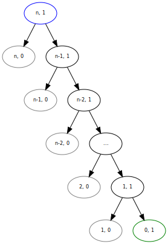
The height of this recursive tree is \( n \), so the time required is \( T(n,1)=2n+1 \).
Then we consider the case where coins of denomination 5 and 1 are used.
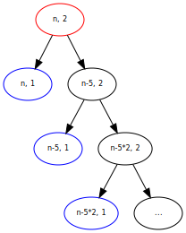
To figure out the height of this recursive tree, consider the special case of (cc 11 2).
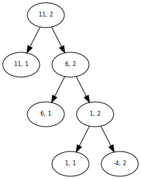
Height is \( \lceil 11/5 \rceil = 3 \).
So \( T(n,2)= \left\lceil \frac{n}{5} \right\rceil T(n,1) + \left\lceil \frac{n}{5} \right\rceil + 1 \).
The use of 3 coins is similar to the use of 2 coins, which leads to \( T(n,k) = \left\lceil \frac{n}{D_k} \right\rceil T(n, k-1) + \left\lceil \frac{n}{D_k} \right\rceil + 1 = \Theta(n^k) \).
- Exercise 1.15
The sine of an angle (specified in radians) can be computed by making use of the approximation \( sinx \approx x \) if \( x \) is sufficiently small, and the trigonometric identity
\begin{equation*}
\sin x = 3 \sin \frac{x}{3} - 4 \sin^3 \frac{x}{3}
\end{equation*}
to reduce the size of the argument of sin. (For purposes of this exercise an angle is considered “sufficiently small” if its magnitude is not greater than 0.1 radians.) These ideas are incorporated in the following procedures:
(define (cube x) (* x x x))
(define (p x) (- (* 3 x) (* 4 (cube x))))
(define (sine angle)
(if (not (> (abs angle) 0.1))
angle
(p (sine (/ angle 3.0)))))
- How many times is the procedure p applied when
(sine 12.15) is evaluated?
- What is the order of growth in space and number of steps (as a function of \( a \)) used by the process generated by the sine procedure when
(sine a) is evaluated?
Solution
(sine 12.15)
(p (sine 4.05))
(p (p (sine 1.35)))
(p (p (p (sine 0.45))))
(p (p (p (p (sine 0.15)))))
(p (p (p (p (p (sine 0.05))))))
(p (p (p (p (p 0.05)))))
The number of times procedure p has been applied is \( \lceil \log_3 10*a \rceil \), i.e. 5.
So the order of growth in space and number of steps is \( \Theta(\log a) \).
1.2.4 Exponentiation
Recursive definition:
\begin{align*}
b^n &= b \cdot b^{n-1}, \\
b^0 &= 1.
\end{align*}
(define (expt b n)
(if (= n 0)
1
(* b (expt b (- n 1)))))
This is a linear recursive process, which requires \( \Theta(n) \) steps and \( \Theta(n) \) space.
Successive squaring:
\begin{align*}
b^n &= (b^{n/2})^2 \ \text{if $n$ is even}, \\
b^n &= b \cdot b^{n-1} \ \text{if $n$ is odd}.
\end{align*}
(define (fast-expt b n)
(cond ((= n 0)
1)
((even? n)
(square (fast-expt b (/ n 2))))
(else
(* b (fast-expt b (- n 1))))))
The process has \( \Theta(\log n) \) growth.
- Exercise 1.16
Design a procedure that evolves an iterative exponentiation process that uses successive squaring and uses a logarithmic number of steps, as does fast-expt. (Hint: Using the observation that \( (b^{n/2})^2=(b^2)^{n/2} \), keep, along with the exponent n and the base b, an additional state variable a, and define the state transformation in such a way that the product \( ab^n \) is unchanged from state to state. At the beginning of the process \( a \) is taken to be 1, and the answer is given by the value of \( a \) at the end of the process. In general, the technique of defining an invariant quantity that remains unchanged from state to state is a powerful way to think about the design of iterative algorithms.)
Solution
(define (fast-expt b n)
(iter 1 b n))
(define (iter a b n)
(cond ((= n 0) a)
((even? n) (iter a (square b) (/ n 2)))
(else (iter (* a b) b (- n 1)))))
Listing 1.4: exercise-1-16
<<common>>
<<exercise-1-16>>
(p (fast-expt 2 3))
- Exercise 1.17
The exponentiation algorithms in this section are based on performing exponentiation by means of repeated multiplication. In a similar way, one can perform integer multiplication by means of repeated addition. The following multiplication procedure (in which it is assumed that our language can only add, not multiply) is analogous to the expt procedure:
(define (* a b)
(if (= b 0)
0
(+ a (* a (- b 1)))))
This algorithm takes a number of steps that is linear in \( b \). Now suppose we include, together with addition, operations double, which doubles an integer, and halve, which divides an (even) integer by 2. Using these, design a multiplication procedure analogous to fast-expt that uses a logarithmic number of steps.
Solution
(define (* a b)
(cond ((= b 1) a)
((even? b) (* (double a) (halve b)))
(else (+ a (* a (- b 1))))))
Listing 1.5: exercise-1-17
<<common>>
(define (double x) (+ x x))
(define (halve x) (/ x 2))
<<exercise-1-17>>
(p (* 3 4))
- Exercise 1.18
Using the results of Exercise 1.16 and Exercise 1.17, devise a procedure that generates an iterative process for multiplying two integers in terms of adding, doubling, and halving and uses a logarithmic number of steps.
Solution
(define (* a b)
(iter a b))
(define (iter a b)
(cond ((= b 1) a)
((even? b) (iter (double a) (halve b)))
(else (iter (+ a a) (- b 1)))))
Listing 1.6: exercise-1-18
<<common>>
(define (double x) (+ x x))
(define (halve x) (/ x 2))
<<exercise-1-18>>
(p (* 3 4))
- Exercise 1.19
There is a clever algorithm for computing the Fibonacci numbers in a logarithmic number of steps. Recall the transformation of the state variables \( a \) and \( b \) in the fib-iter process of Tree Recursion: \( a \gets a+b \) and \( b \gets a \). Call this transformation \( T \), and observe that applying \( T \) over and over again \( n \) times, starting with 1 and 0, produces the pair \( \operatorname{Fib}(n+1) \) and \( \operatorname{Fib}(n) \). In other words, the Fibonacci numbers are produced by applying \( T^n \), the \( n^{th} \) power of the transformation \( T \), starting with the pair \( (1, 0) \). Now consider \( T \) to be the special case of \( p=0 \) and \( q=1 \) in a family of transformations \( T_{pq} \), where \( T_{pq} \) transforms the pair \( (a,b) \) according to \( a \gets bq+aq+ap \) and \( b \gets bp+aq \). Show that if we apply such a transformation \( T_{pq} \) twice, the effect is the same as using a single transformation \( T_{p^\prime q^\prime} \) of the same form, and compute \( p^\prime \) and \( q^\prime \) in terms of \( p \) and \( q \). This gives us an explicit way to square these transformations, and thus we can compute \( T^n \) using successive squaring, as in the fast-expt procedure. Put this all together to complete the following procedure, which runs in a logarithmic number of steps:
(define (fib n)
(fib-iter 1 0 0 1 n))
(define (fib-iter a b p q count)
(cond ((= count 0) b)
((even? count)
(fib-iter a
b
⟨??⟩ ;compute p'
⟨??⟩ ;compute q'
(/ count 2)))
(else
(fib-iter (+ (* b q) (* a q) (* a p))
(+ (* b p) (* a q))
p
q
(- count 1)))))
Solution
\begin{align*}
T_{pq} \cdot \begin{bmatrix}
a \\
b
\end{bmatrix}
&= \begin{bmatrix}
(p+q)a + qb \\
qa + pb
\end{bmatrix} \\
\implies
T_{pq}
&= \begin{bmatrix}
p+q & q \\
q & p
\end{bmatrix}\\
\therefore T_{pq}(T_{pq}A) &= (T_{pq}T_{pq})A \\
&= T_{p^\prime q^\prime}A \\
&= \begin{bmatrix}
p^2 + 2pq + 2q^2 & 2pq + q^2 \\
2pq + q^2 & p^2 + q^2
\end{bmatrix} \cdot
\begin{bmatrix}
a \\
b
\end{bmatrix} \\
&= \begin{bmatrix}
(p^2 + 2pq + 2q^2)a + (2pq + q^2)b \\
(2pq + q^2)a + (p^2 + q^2)b
\end{bmatrix} \\
p^\prime &= p^2 + q^2 \\
q^\prime &= 2pq + q^2
\end{align*}
(define (fib n)
(fib-iter 1 0 0 1 n))
(define (fib-iter a b p q count)
(cond ((= count 0) b)
((even? count)
(fib-iter a
b
(+ (square p) (square q))
(+ (* 2 p q) (square q))
(/ count 2)))
(else
(fib-iter (+ (* b q) (* a q) (* a p))
(+ (* b p) (* a q))
p
q
(- count 1)))))
Listing 1.7: exercise-1-19
<<common>>
<<exercise-1-19>>
(p (fib 0))
(p (fib 1))
(p (fib 2))
(p (fib 3))
(p (fib 4))
(p (fib 5))
1.2.5 Greatest Common Divisors
Euclid’s Algorithm: \( \operatorname{GCD}(a,b) = \operatorname{GCD}(b,r), \ r = a \% b. \)
Lame’s Theorem: If the process takes \( k \) steps, then \( n = \min(a,b) \geqslant Fib(k) \approx \varphi^k/\sqrt{5}. \) Therefore the number of steps \( k \) grows as the logarithm (to the base \( \varphi = \frac{1+\sqrt{5}}{2} \)) of \( n \). Hence, the order of growth is \( \Theta(\log n) \).
(define (gcd a b)
(if (= b 0)
a
(gcd b (remainder a b))))
- Exercise 1.20
The process that a procedure generates is of course dependent on the rules used by the interpreter. As an example, consider the iterative gcd procedure given above. Suppose we were to interpret this procedure using normal-order evaluation, as discussed in The Substitution Model for Procedure Application. (The normal-order-evaluation rule for if is described in Exercise 1.5.) Using the substitution method (for normal order), illustrate the process generated in evaluating (gcd 206 40) and indicate the remainder operations that are actually performed. How many remainder operations are actually performed in the normal-order evaluation of (gcd 206 40)? In the applicative-order evaluation?
;;; normal-order, 18 times in total
(gcd 206 40)
;; compare b to 0, compute b, 1 time
(gcd 40 (remainder 206 40))
;; compare b to 0, compute b, 2 times
(gcd (remainder 206 40)
(remainder 40 (remainder 206 40)))
;; compare b to 0, compute b, 4 times
(gcd (remainder 40 (remainder 206 40))
(remainder (remainder 206 40)
(remainder 40 (remainder 206 40))))
;; compare b to 0, compute b, 7 times
;; then compute a as result, 4 times
(gcd (remainder (remainder 206 40)
(remainder 40 (remainder 206 40)))
(remainder (remainder 40 (remainder 206 40))
(remainder (remainder 206 40)
(remainder 40 (remainder 206 40)))))
;;; applicative-order, 4 times in total
(gcd 206 40)
(gcd 40 (remainder 206 40)) ;=> (gcd 40 6)
(gcd 6 (remainder 40 6)) ;=> (gcd 6 4)
(gcd 4 (remainder 6 4)) ;=> (gcd 4 2)
(gcd 2 (remainder 4 2)) ;=> (gcd 2 0)
1.2.6 Example Testing for Primality
Test divisors between \( 1 \) and \( \sqrt{n} \), the number of steps required to identify \( n \) as prime will have order of growth \( \Theta(\sqrt{n}) \).
(define (smallest-divisor n)
(find-divisor n 2))
(define (find-divisor n test-divisor)
(cond ((> (square test-divisor) n) n)
((divides? test-divisor n) test-divisor)
(else (find-divisor n (+ test-divisor 1)))))
(define (divides? a b)
(= (remainder b a) 0))
;; n is prime if and only if n is its own smallest divisor
(define (prime? n)
(= n (smallest-divisor n)))
Listing 1.8: searching-for-divisors
Fermat’s Little Theorem: If \( n \) is prime, then \( a^n \equiv a \pmod n, \) \( a \) is positive integer less than \( n \).
(define (expmod base exp m)
(cond ((= exp 0) 1)
((even? exp)
(remainder
(square (expmod base (/ exp 2) m))
m))
(else
(remainder
(* base (expmod base (- exp 1) m))
m))))
(define (fermat-test n)
(define (try-it a)
(= (expmod a n n) a))
(try-it (+ 1 (random (- n 1)))))
(define (fast-prime? n times)
(cond ((= times 0) true)
((fermat-test n)
(fast-prime? n (- times 1)))
(else false)))
Key points of the fermat test:
-
Expmod using successive squaring computes \( a^n \) with order of growth \( \Theta(\log n). \)
- The remainder inside expmod recursion reduces the size of the number. See Exercise 125 (1).
- Exercise 1.21
Use the smallest-divisor procedure to find the smallest divisor of each of the following numbers: 199, 1999, 19999.
Solution
<<common>>
<<searching-for-divisors>>
(p (smallest-divisor 199))
(p (smallest-divisor 1999))
(p (smallest-divisor 19999))
- Exercise 1.22
Most Lisp implementations include a primitive called runtime that returns an integer that specifies the amount of time the system has been running (measured, for example, in microseconds). The following timed-prime-test procedure, when called with an integer \( n \), prints \( n \) and checks to see if \( n \) is prime. If \( n \) is prime, the procedure prints three asterisks followed by the amount of time used in performing the test.
(define (timed-prime-test n)
(newline)
(display n)
(start-prime-test n (runtime)))
(define (start-prime-test n start-time)
(if (prime? n)
(report-prime (- (runtime) start-time))))
(define (report-prime elapsed-time)
(display " *** ")
(display elapsed-time))
Using this procedure, write a procedure search-for-primes that checks the primality of consecutive odd integers in a specified range. Use your procedure to find the three smallest primes larger than 1000; larger than 10,000; larger than 100,000; larger than 1,000,000. Note the time needed to test each prime. Since the testing algorithm has order of growth of \( \Theta(\sqrt{n}) \), you should expect that testing for primes around 10,000 should take about \( \sqrt{10} \) times as long as testing for primes around 1000. Do your timing data bear this out? How well do the data for 100,000 and 1,000,000 support the \( \Theta(\sqrt{n}) \) prediction? Is your result compatible with the notion that programs on your machine run in time proportional to the number of steps required for the computation?
Solution
(define (timed-prime-test n)
(let ((start-time (runtime)))
(if (prime? n)
(begin
(newline)
(display n)
(display " *** ")
(display (- (runtime) start-time))
#t)
#f)))
(define (search-for-primes n count)
(if (> count 0)
(if (odd? n)
(if (timed-prime-test n)
(search-for-primes (1+ n) (-1+ count))
(search-for-primes (1+ n) count))
(search-for-primes (1+ n) count)))
'done)
Listing 1.10: exercise-1-22
<<common>>
<<searching-for-divisors>>
<<exercise-1-22>>
(search-for-primes 100000000000 3)
(search-for-primes 1000000000000 3)
(search-for-primes 10000000000000 3)
1 ]=> (search-for-primes 100000000000 3)
100000000003 *** .33999999999999997
100000000019 *** .33999999999999997
100000000057 *** .3400000000000001
;Value: done
1 ]=> (search-for-primes 1000000000000 3)
1000000000039 *** 1.06
1000000000061 *** 1.0499999999999998
1000000000063 *** 1.06
;Value: done
1 ]=> (search-for-primes 10000000000000 3)
10000000000037 *** 3.33
10000000000051 *** 3.329999999999999
10000000000099 *** 3.33
;Value: done
- Exercise 1.23
The smallest-divisor procedure shown at the start of this section does lots of needless testing: After it checks to see if the number is divisible by 2 there is no point in checking to see if it is divisible by any larger even numbers. This suggests that the values used for test-divisor should not be 2, 3, 4, 5, 6, …, but rather 2, 3, 5, 7, 9, …. To implement this change, define a procedure next that returns 3 if its input is equal to 2 and otherwise returns its input plus 2. Modify the smallest-divisor procedure to use (next test-divisor) instead of (+ test-divisor 1). With timed-prime-test incorporating this modified version of smallest-divisor, run the test for each of the 12 primes found in Exercise 122 (1). Since this modification halves the number of test steps, you should expect it to run about twice as fast. Is this expectation confirmed? If not, what is the observed ratio of the speeds of the two algorithms, and how do you explain the fact that it is different from 2?
Solution
(define (find-divisor n test-divisor)
(cond ((> (square test-divisor) n) n)
((divides? test-divisor n) test-divisor)
(else (find-divisor n (next test-divisor)))))
(define (next n)
(if (= n 2)
3
(+ n 2)))
Listing 1.11: exercise-1-23
<<common>>
<<searching-for-divisors>>
<<exercise-1-22>>
(search-for-primes 10000000000000 3)
<<exercise-1-23>>
(search-for-primes 10000000000000 3)
1 ]=> (search-for-primes 10000000000000 3)
10000000000037 *** 3.37
10000000000051 *** 3.4899999999999998
10000000000099 *** 3.4399999999999995
;Value: done
1 ]=> (search-for-primes 10000000000000 3)
10000000000037 *** 2.09
10000000000051 *** 2.130000000000001
10000000000099 *** 2.09
;Value: done
The result is about 1.6 times faster. The comparison in next takes time.
- Exercise 1.24
Modify the timed-prime-test procedure of Exercise 122 (1) to use fast-prime? (the Fermat method), and test each of the 12 primes you found in that exercise. Since the Fermat test has \( \Theta(\log n) \) growth, how would you expect the time to test primes near 1,000,000 to compare with the time needed to test primes near 1000? Do your data bear this out? Can you explain any discrepancy you find?
Solution
(define (prime? n)
(fast-prime? n 100))
Listing 1.12: exercise-1-24
<<common>>
<<fermat-test>>
<<searching-for-divisors>>
<<exercise-1-22>>
<<exercise-1-24>>
(search-for-primes (round->exact 1e100) 1)
(search-for-primes (round->exact 1e200) 1)
1 ]=> (search-for-primes (round->exact 1e100) 1)
10000000000000000159028911097599180468360808563945281389781327557747838772170381060813469985856815251 *** .09
;Value: done
1 ]=> (search-for-primes (round->exact 1e200) 1)
99999999999999996973312221251036165947450327545502362648241750950346848435554075534196338404706251868027512415973882408182135734368278484639385041047239877871023591066789981811181813306167128854888513 *** .25
;Value: done
- Exercise 1.25
Alyssa P. Hacker complains that we went to a lot of extra work in writing expmod. After all, she says, since we already know how to compute exponentials, we could have simply written
(define (expmod base exp m)
(remainder (fast-expt base exp) m))
Is she correct? Would this procedure serve as well for our fast prime tester? Explain.
Solution
<<common>>
<<fermat-test>>
<<exercise-1-22>>
(define (prime? n)
(fast-prime? n 100))
;; remainder inside recurrence
(search-for-primes 20000 1)
<<fast-expt>>
<<exercise-1-25-q>>
;; use farst-expt, then remainder
(search-for-primes 20000 1)
1 ]=> ;; remainder inside recurrence
(search-for-primes 20000 1)
20011 *** 0.
;Value: done
1 ]=> ;; use farst-expt, then remainder
(search-for-primes 20000 1)
20011 *** 1.8599999999999999
;Value: done
Both work, but the remainder within the recursion decreases the size of the number and thus increases efficiency.
(expmod 2 4 3)
(remainder (square (expmod 2 2 3)) 3)
(remainder (square (remainder (square (expmod 2 1 3)) 3)) 3)
(remainder (square (remainder (square (remainder (* 2 (expmod 2 0 3)) 3)) 3)) 3)
(remainder (square (remainder (square (remainder (* 2 1) 3)) 3)) 3)
(remainder (square (remainder (square (remainder 2 3)) 3)) 3)
(remainder (square (remainder (square 2) 3)) 3)
(remainder (square (remainder 4 3)) 3)
(remainder (square 1) 3)
(remainder 1 3)
1
(expmod 2 4 3)
(remainder (fast-expt 2 4) 3)
(remainder (square (fast-expt 2 2)) 3)
(remainder (square (square (fast-expt 2 1))) 3)
(remainder (square (square (* 2 (fast-expt 2 0)))) 3)
(remainder (square (square (* 2 1))) 3)
(remainder (square (square 2)) 3)
(remainder (square 4) 3)
(remainder 16 3)
1
- Exercise 1.26
Louis Reasoner is having great difficulty doing Exercise 124 (1). His fast-prime? test seems to run more slowly than his prime? test. Louis calls his friend Eva Lu Ator over to help. When they examine Louis’s code, they find that he has rewritten the expmod procedure to use an explicit multiplication, rather than calling square:
(define (expmod base exp m)
(cond ((= exp 0) 1)
((even? exp)
(remainder
(* (expmod base (/ exp 2) m)
(expmod base (/ exp 2) m))
m))
(else
(remainder
(* base (expmod base (- exp 1) m))
m))))
“I don’t see what difference that could make,” says Louis. “I do.” says Eva. “By writing the procedure like that, you have transformed the \( \Theta(\log n) \) process into a \( \Theta(n) \) process.” Explain.
Solution
The rewriting procedure creates a tree recursion, so the order of growth becomes \( \Theta(2^{\log n})=\Theta(n). \)
- Exercise 1.27
Demonstrate that the Carmichael numbers listed in Footnote 47 really do fool the Fermat test. That is, write a procedure that takes an integer n and tests whether an is congruent to a modulo n for every a<n, and try your procedure on the given Carmichael numbers.
(define (pass-fermat-test? n)
(newline) (display n) (display " ")
(define (iter a)
(cond ((= a 0) #t)
((= (expmod a n n) a)
(iter (- a 1)))
(else #f)))
(display (iter (- n 1))))
Listing 1.13: exercise-1-27
<<common>>
<<fermat-test>>
<<exercise-1-27>>
(map pass-fermat-test? '(561 1105 1729 2465 2821 6601))
561 #t
1105 #t
1729 #t
2465 #t
2821 #t
6601 #t
- Exercise 1.28
One variant of the Fermat test that cannot be fooled is called the Miller-Rabin test (Miller 1976; Rabin 1980). This starts from an alternate form of Fermat’s Little Theorem, which states that if n is a prime number and a is any positive integer less than n, then a raised to the \( (n-1) \)-st power is congruent to 1 modulo n. To test the primality of a number n by the Miller-Rabin test, we pick a random number \( a<n \) and raise a to the \( (n-1) \)-st power modulo n using the expmod procedure. However, whenever we perform the squaring step in expmod, we check to see if we have discovered a “nontrivial square root of 1 modulo n,” that is, a number not equal to 1 or \( n-1 \) whose square is equal to 1 modulo n. It is possible to prove that if such a nontrivial square root of 1 exists, then n is not prime. It is also possible to prove that if n is an odd number that is not prime, then, for at least half the numbers \( a<n \), computing \( a^{n−1} \) in this way will reveal a nontrivial square root of 1 modulo n. (This is why the Miller-Rabin test cannot be fooled.) Modify the expmod procedure to signal if it discovers a nontrivial square root of 1, and use this to implement the Miller-Rabin test with a procedure analogous to fermat-test. Check your procedure by testing various known primes and non-primes. Hint: One convenient way to make expmod signal is to have it return 0.
Solution
Miller-Rabin test:
\( \forall a (a<n \land a^{n-1} \equiv 1 \pmod n) \to n \text{ is prime}. \)
\( \exists a (a \ne 1 \land a \ne n-1 \land a^2 \equiv 1 \pmod n) \to n \text{ is not prime}. \)
(define (sqmod x m)
"Return x^2 if `x^2 mod m` is not equal to `1 mod m`
and x != m - 1 and x != 1; 0 otherwise."
(let ((square (* x x)))
(cond ((and (= (remainder square m) 1) ; 1 mod m = 1
(not (= x (- m 1)))
(not (= x 1)))
0)
(else square))))
(define (expmod base exp m)
(cond ((= exp 0) 1)
((even? exp)
(remainder (sqmod (expmod base (/ exp 2) m) m)
m))
(else
(remainder (* base (expmod base (- exp 1) m))
m))))
(define (miller-rabin-test? n)
(define (try-it a)
(= (expmod a (- n 1) n) 1))
(try-it (+ 1 (random (- n 1)))))
(define (fast-prime? n times)
(cond ((= times 0) #t)
((miller-rabin-test? n) (fast-prime? n (- times 1)))
(else #f)))
(define (prime? n)
(fast-prime? n 100))
Listing 1.14: exercise-1-28-prime
<<common>>
<<exercise-1-28-prime>>
(define (test x)
(newline)
(display x) (display " ")
(display (prime? x)))
(map test '(561 1105 1729 2465 2821 6601 7 11))
561 #f
1105 #f
1729 #f
2465 #f
2821 #f
6601 #f
7 #t
11 #t
1.3 Formulating Abstractions with Higher-Order Procedures
- procedures
abstractions that describe compound operations on numbers independent of the particular numbers.
- higher-order procedures
Procedures that manipulate procedures are called higher-order procedures. Procedures that can accept procedures as arguments or return procedures as values.
- What do compound procedures permit us?
They permit us to express general methods of computing as explicit elements in our programming language.
- What do higher-order procedures permit us?
They permit us to manipulate these general methods to create further abstractions.
- What ability does procedures provide?
The ability to build abstractions by assigning names to common patterns and then to work in terms of the abstractions directly.
- Why is it important to be able to think in terms of these abstractions?
So we can be ready to apply them in new contexts.
- What is the significance of higher-order procedures?
That they enable us to represent these abstractions explicitly as elements in our programming language, so that they can be handled just like other computational elements.
- What is first-class status?
Elements with the fewest restrictions are said to have first-class status.
- What are the rights and privileges of first-class elements?
- They may be named by variables.
- They may be passed as arguments to procedures.
- They may be returned as the results of procedures.
- They may be included in data structures.
1.3.1 Procedures as Arguments
(define (sum term a next b)
(if (> a b)
0
(+ (term a)
(sum term (next a) next b))))

(define (integral f a b dx)
(define (add-dx x) (+ x dx))
(* (sum f (+ a (/ dx 2.0)) add-dx b)
dx))
Listing 1.16: definite-integral
\( \int_a^b f = [f(a + \frac{dx}{2}) + f(a+dx+\frac{dx}{2}) + f(a+2dx+\frac{dx}{2}) + \dotsc]dx \)
- Exercise 1.29
Simpson’s Rule is a more accurate method of numerical integration than the method illustrated above. Using Simpson’s Rule, the integral of a function f between a and b is approximated as
\( \frac{h}{3} (y_0+4y_1+2y_2+4y_3+2y_4+ \dotsb +2y_{n-2}+4y_{n-1}+y_n) \),
where \( h=(b-a)/n \), for some even integer n, and \( y_k=f(a+kh) \). (Increasing n increases the accuracy of the approximation.) Define a procedure that takes as arguments f, a, b, and n and returns the value of the integral, computed using Simpson’s Rule. Use your procedure to integrate cube between 0 and 1 (with \( n=100 \) and \( n=1000 \)), and compare the results to those of the integral procedure shown above.
Solution
\( \frac{h}{3}(y_0 + y_n + 4(y_1 + y_3 + \dotsb +y_{n-1})+ 2(y_2 + y_4 +\dotsb + y_{n-2})) \)
(define (simpson-integral f a b n)
(define (h)
(/ (- b a) n))
(define (y k)
(f (+ a (* k (h)))))
(define (add-two x)
(+ x 2))
(* (/ (h) 3)
(+ (y 0)
(y n)
(* 4 (sum y 1 add-two (- n 1)))
(* 2 (sum y 2 add-two (- n 2))))))
Listing 1.17: exercise-1-29
<<common>>
<<sum>>
<<definite-integral>>
<<exercise-1-29>>
(p (simpson-integral cube 0.0 1.0 100))
(p (simpson-integral cube 0.0 1.0 1000))
(p (integral cube 0.0 1.0 0.01))
(p (integral cube 0.0 1.0 0.001))
0.25000000000000006
0.2500000000000002
0.24998750000000042
0.249999875000001
- Exercise 1.30
The sum procedure above generates a linear recursion. The procedure can be rewritten so that the sum is performed iteratively. Show how to do this by filling in the missing expressions in the following definition:
(define (sum term a next b)
(define (iter a result)
(if ⟨??⟩
⟨??⟩
(iter ⟨??⟩ ⟨??⟩)))
(iter ⟨??⟩ ⟨??⟩))
Solution
(define (sum term a next b)
(define (iter a result)
(if (> a b)
result
(iter (next a) (+ result (term a)))))
(iter a 0))
Listing 1.18: exercise-1-30
<<common>>
<<exercise-1-30>>
<<definite-integral>>
(p (integral cube 0.0 1.0 0.01))
- Exercise 1.31
- The sum procedure is only the simplest of a vast number of similar abstractions that can be captured as higher-order procedures.51 Write an analogous procedure called product that returns the product of the values of a function at points over a given range. Show how to define factorial in terms of product. Also use product to compute approximations to π using the formula
\[ \frac{\pi}{4}=\frac{2\cdot 4\cdot 4\cdot 6\cdot 6\cdot 8\dotsb}{3\cdot 3\cdot 5\cdot 5\cdot 7\cdot 7\dotsb} \]
- If your
product procedure generates a recursive process, write one that generates an iterative process. If it generates an iterative process, write one that generates a recursive process.
Solution
(define (product term a next b)
(if (> a b)
1
(* (term a)
(product term (next a) next b))))
Listing 1.19: exercise-1-31-recur
(define (product term a next b)
(define (iter a result)
(if (> a b)
result
(iter (next a) (* result (term a)))))
(iter a 1))
Listing 1.20: exercise-1-31-iter
(define (factorial x)
(product identity 1 add-one x))
Listing 1.21: exercise-1-31-factorial
(define (numer-term x)
(if (odd? x) (+ x 1) (+ x 2)))
(define (denom-term x)
(if (odd? x) (+ x 2) (+ x 1)))
(define (pi n)
(* 4.0 (/ (product numer-term 1 add-one n)
(product denom-term 1 add-one n))))
Listing 1.22: exercise-1-31-pi
<<common>>
<<exercise-1-31-recur>>
<<exercise-1-31-factorial>>
<<exercise-1-31-pi>>
(p (factorial 4))
(p (pi 100))
<<exercise-1-31-iter>>
(p (factorial 4))
(p (pi 100))
24
3.1570301764551676
24
3.1570301764551676
- Exercise 1.32
- Show that
sum and product (Exercise 131 (1)) are both special cases of a still more general notion called accumulate that combines a collection of terms, using some general accumulation function:
(accumulate
combiner null-value term a next b)
Accumulate takes as arguments the same term and range specifications as sum and product, together with a combiner procedure (of two arguments) that specifies how the current term is to be combined with the accumulation of the preceding terms and a null-value that specifies what base value to use when the terms run out. Write accumulate and show how sum and product can both be defined as simple calls to accumulate.
- If your
accumulate procedure generates a recursive process, write one that generates an iterative process. If it generates an iterative process, write one that generates a recursive process.
Solution
(define (accumulate combiner null-value term a next b)
(if (> a b)
null-value
(combiner
(term a)
(accumulate combiner null-value term (next a) next b))))
Listing 1.23: exercise-1-32-recur
(define (accumulate combiner null-value term a next b)
(define (iter a result)
(if (> a b)
result
(iter (next a) (combiner result (term a)))))
(iter a null-value))
Listing 1.24: exercise-1-32-iter
<<common>>
<<exercise-1-32-recur>>
(define (sum term a next b)
(accumulate + 0 term a next b))
(define (product term a next b)
(accumulate * 1 term a next b))
(p (sum identity 1 add-one 5))
(p (product identity 1 add-one 5))
<<exercise-1-32-iter>>
(p (sum identity 1 add-one 5))
(p (product identity 1 add-one 5))
- Exercise 1.33
You can obtain an even more general version of accumulate (Exercise 132 (1)) by introducing the notion of a filter on the terms to be combined. That is, combine only those terms derived from values in the range that satisfy a specified condition. The resulting filtered-accumulate abstraction takes the same arguments as accumulate, together with an additional predicate of one argument that specifies the filter. Write filtered-accumulate as a procedure. Show how to express the following using filtered-accumulate:
- the sum of the squares of the prime numbers in the interval a to b (assuming that you have a
prime? predicate already written)
- the product of all the positive integers less than n that are relatively prime to n (i.e., all positive integers \( i<n \) such that \( \operatorname{GCD}(i,n)=1 \)).
Solution
(define (filtered-accumulate filter combiner
null-value term a next b)
(cond ((> a b)
null-value)
((filter a)
(combiner
(term a)
(filtered-accumulate filter combiner
null-value term
(next a) next b)))
(else
(filtered-accumulate filter combiner
null-value term
(next a) next b))))
Listing 1.25: exercise-1-33-fa
(define (sum-prime-squares a b)
(filtered-accumulate prime? + 0 identity a add-one b))
(define (product-prime-less-than n)
(define (rel-prime? x)
(= (gcd x n) 1))
(filtered-accumulate rel-prime? * 1 identity 1 add-one n))
Listing 1.26: exercise-1-33
<<common>>
<<exercise-1-28-prime>>
<<exercise-1-33-fa>>
<<exercise-1-33>>
(p (sum-prime-squares 2 10)) ; 2 3 5 7
(p (product-prime-less-than 8)) ; 1 3 5 7
1.3.2 Constructing Procedures Using Lambda
- Exercise 1.34
Suppose we define the procedure
Listing 1.27: exercise-1-34-q
Then we have
(f square)
4
(f (lambda (z) (* z (+ z 1))))
6
What happens if we (perversely) ask the interpreter to evaluate the combination (f f)? Explain.
Solution
<<common>>
<<exercise-1-34-q>>
(f f) ; finally (2 2)
ice-9/boot-9.scm:1669:16: In procedure raise-exception:
Wrong type to apply: 2
Entering a new prompt. Type `,bt' for a backtrace or `,q' to continue.
scheme@(guile-user) [1]>
1.3.3 Procedures as General Methods
| compound procedure | independent of the particular numbers |
| higher-order procedure | independent of the particular functions |
(define (search f neg-point pos-point)
(let ((midpoint
(average neg-point pos-point)))
(if (close-enough? neg-point pos-point)
midpoint
(let ((test-value (f midpoint)))
(cond
((positive? test-value)
(search f neg-point midpoint))
((negative? test-value)
(search f midpoint pos-point))
(else midpoint))))))
(define (close-enough? x y)
(< (abs (- x y)) 0.001))
(define (half-interval-method f a b)
(let ((a-value (f a))
(b-value (f b)))
(cond ((and (negative? a-value)
(positive? b-value))
(search f a b))
((and (negative? b-value)
(positive? a-value))
(search f b a))
(else
(error "Values are not of
opposite sign" a b)))))
Listing 1.28: half-interval-method
A number \( x \) is called a fixed point of a function \( f \) if \( x \) satisfies the equation \( f(x)=x \). For some functions \( f \) we can locate a fixed point by beginning with an initial guess and applying \( f \) repeatedly,
\[ f(x),f(f(x)),f(f(f(x))), \dotsc , \]
until the value does not change very much.
(define tolerance 0.00001)
(define (fixed-point f first-guess)
(define (close-enough? v1 v2)
(< (abs (- v1 v2))
tolerance))
(define (try guess)
(let ((next (f guess)))
(if (close-enough? guess next)
next
(try next))))
(try first-guess))
Listing 1.29: fixed-point
Compute square roots of x by looking for a fixed point of the function \( y \mapsto x/y. \)
(define (sqrt x)
(fixed-point (lambda (y) (/ x y)) 1.0))
Use average damping to aid the convergence of fixed-point searches.
Look for a fixed point of \( y \mapsto \frac12 (y+x/y) \):
(define (sqrt x)
(fixed-point
(lambda (y) (average y (/ x y)))
1.0))
- Exercise 1.35
Show that the golden ratio \( \varphi \) Tree Recursion is a fixed point of the transformation \( x \mapsto 1+1/x \), and use this fact to compute \( \varphi \) by means of the fixed-point procedure.
Solution
(define (golden-ratio)
(fixed-point (lambda (x) (+ 1 (/ 1 x)))
1.0))
Listing 1.31: exercise-1-35
<<common>>
<<fixed-point>>
<<exercise-1-35>>
(p (golden-ratio))
- Exercise 1.36
Modify fixed-point so that it prints the sequence of approximations it generates, using the newline and display primitives shown in Exercise 122 (1). Then find a solution to \( x^x=1000 \) by finding a fixed point of \( x \mapsto \log(1000)/\log(x) \). (Use Scheme’s primitive log procedure, which computes natural logarithms.) Compare the number of steps this takes with and without average damping. (Note that you cannot start fixed-point with a guess of 1, as this would cause division by \( \log(1)=0 \).)
Solution
(define count 1)
(define (fixed-point f guess)
(let ((next-guess (f guess)))
(newline) (display count)
(display ": ")(display next-guess)
(if (< (abs (- next-guess guess)) 0.0001)
next-guess
(begin (set! count (+ 1 count))
(fixed-point f next-guess)))))
Listing 1.32: exercise-1-36-fpp
<<common>>
<<exercise-1-36-fpp>>
(p "without average damping")
(fixed-point (lambda (x)
(/ (log 1000) (log x)))
2)
(p "")
(p "with average damping")
(set! count 1)
(fixed-point (lambda (x)
(/ (+ x (/ (log 1000) (log x))) 2))
2)
without average damping
1: 9.965784284662087
2: 3.004472209841214
3: 6.279195757507157
4: 3.759850702401539
5: 5.215843784925895
6: 4.182207192401397
7: 4.8277650983445906
8: 4.387593384662677
9: 4.671250085763899
10: 4.481403616895052
11: 4.6053657460929
12: 4.5230849678718865
13: 4.577114682047341
14: 4.541382480151454
15: 4.564903245230833
16: 4.549372679303342
17: 4.559606491913287
18: 4.552853875788271
19: 4.557305529748263
20: 4.554369064436181
21: 4.556305311532999
22: 4.555028263573554
23: 4.555870396702851
24: 4.555315001192079
25: 4.5556812635433275
26: 4.555439715736846
27: 4.555599009998291
28: 4.555493957531389
29: 4.555563237292884
with average damping
1: 5.9828921423310435
2: 4.922168721308343
3: 4.628224318195455
4: 4.568346513136242
5: 4.5577305909237005
6: 4.555909809045131
7: 4.555599411610624
8: 4.5555465521473675
- Exercise 1.37
- An infinite continued fraction is an expression of the form
\[ f=\large\frac{N_1}{D_1+\frac{N_2}{D_2+\frac{N_3}{D_3+\cdots}}} \]
As an example, one can show that the infinite continued fraction expansion with the \( N_i \) and the \( D_i \) all equal to 1 produces \( 1/\varphi \), where \( \varphi \) is the golden ratio (described in Tree Recursion). One way to approximate an infinite continued fraction is to truncate the expansion after a given number of terms. Such a truncation—a so-called finite continued fraction k-term finite continued fraction —has the form
\[ \large\frac{N_1}{D_1+\frac{N_2}{\ddots+\frac{N_k}{D_k}}} \]
Suppose that n and d are procedures of one argument (the term index i) that return the Ni and Di of the terms of the continued fraction. Define a procedure cont-frac such that evaluating (cont-frac n d k) computes the value of the k-term finite continued fraction. Check your procedure by approximating \( 1/\varphi \) using
(cont-frac (lambda (i) 1.0)
(lambda (i) 1.0)
k)
for successive values of k. How large must you make k in order to get an approximation that is accurate to 4 decimal places?
- If your cont-frac procedure generates a recursive process, write one that generates an iterative process. If it generates an iterative process, write one that generates a recursive process.
Solution
The first three fractions:
\begin{equation*}
\frac{N_1}{D_1},
\frac{N_1}{D_1+\frac{N_2}{D_2}},
\frac{N_1}{D_1+\frac{N_2}{D_2+\frac{N_3}{D_3}}.
\end{equation*}
(define (cont-frac n d k)
(define (recur i)
(/ (n i)
(+ (d i)
(if (= i k)
0
(recur (+ i 1))))))
(recur 1))
Listing 1.33: exercise-1-37-recur
(define (cont-frac-iter n d k)
(define (iter i result)
(if (= i 0)
result
(iter (- i 1)
(/ (n i) (+ (d i) result)))))
(iter k 0))
Listing 1.34: exercise-1-37-iter
<<common>>
<<exercise-1-37-recur>>
(map (lambda (k)
(p (cont-frac (lambda (i) 1.0)
(lambda (i) 1.0)
k)))
'(5 10 15 20 30))
<<exercise-1-37-iter>>
(map (lambda (k)
(p (cont-frac (lambda (i) 1.0)
(lambda (i) 1.0)
k)))
'(5 10 15 20 30))
0.625
0.6179775280898876
0.6180344478216819
0.6180339850173578
0.6180339887496482
0.625
0.6179775280898876
0.6180344478216819
0.6180339850173578
0.6180339887496482
- Exercise 1.38
In 1737, the Swiss mathematician Leonhard Euler published a memoir De Fractionibus Continuis, which included a continued fraction expansion for \( e-2 \), where \( e \) is the base of the natural logarithms. In this fraction, the \( Ni \) are all 1, and the \( Di \) are successively \( 1, 2, 1, 1, 4, 1, 1, 6, 1, 1, 8, \dotsc . \) Write a program that uses your cont-frac procedure from Exercise 137 (1) to approximate \( e \), based on Euler’s expansion.
(define (n i) 1)
(define (d i)
(let ((quot (quotient (- i 2) 3))
(rem (remainder (- i 2) 3)))
(cond ((= i 1) 1)
((= i 2) 2)
((= rem 1) 1)
((= rem 2) 1)
(else (* (+ quot 1) 2)))))
(define (e)
(+ (cont-frac n d 11) 2.0))
Listing 1.35: exercise-1-38
<<common>>
<<exercise-1-37-recur>>
<<exercise-1-38>>
(p (e))
- Exercise 1.39
A continued fraction representation of the tangent function was published in 1770 by the German mathematician J.H. Lambert:
\[ \tan x = \Large\frac{x}{1-\frac{x^2}{3-\frac{x^2}{5-\ddots}}} \]
where x is in radians. Define a procedure (tan-cf x k) that computes an approximation to the tangent function based on Lambert’s formula. k specifies the number of terms to compute, as in Exercise 137 (1).
Solution
(define (cont-frac n d k combiner)
(define (recur i)
(/ (n i)
(combiner (d i)
(if (= i k)
0
(recur (+ i 1))))))
(recur 1))
(define (tan-cf x k)
(define (n i)
(if (= i 1) x (square x)))
(define (d i)
(- (* 2 i) 1))
(cont-frac n d k -))
Listing 1.36: exercise-1-39
<<common>>
<<exercise-1-39>>
(p (tan-cf 2.0 10))
(p (tan 2.0))
-2.1850398632626273
-2.185039863261519
1.3.4 Procedures as Returned Values
- Average damp
(define (average-damp f)
(lambda (x)
(average x (f x))))
Listing 1.37: average-damp
- Newton’s method
If \( x \mapsto g(x) \) is a differentiable function, then a solution of the equation \( g(x)=0 \) is a fixed point of the function \( x \mapsto f(x) \) where
\[ f(x)=x-\frac{g(x)}{Dg(x)} \]
and \( Dg(x) \) is the derivative of \( g \) evaluated at \( x \).
(define (newton-transform g)
(lambda (x)
(- x (/ (g x)
((deriv g) x)))))
(define (newtons-method g guess)
(fixed-point (newton-transform g)
guess))
Listing 1.38: newtons-method
- Derivative
If \( g \) is a function and \( dx \) is a small number, then the derivative \( Dg \) of \( g \) is the function whose value at \( x \) is given by
\[ Dg(x) = \frac{g(x+dx)-g(x)}{dx}. \]
(define dx 0.00001)
(define (deriv g)
(lambda (x)
(/ (- (g (+ x dx)) (g x))
dx)))
- Abstractions and first-class procedures
(define (fixed-point-of-transform
g transform guess)
(fixed-point (transform g) guess))
Listing 1.40: fixed-point-of-transform
(define (sqrt x)
(fixed-point-of-transform
(lambda (y) (/ x y))
average-damp
1.0))
(define (sqrt x)
(fixed-point-of-transform
(lambda (y) (- (square y) x))
newton-transform
1.0))
Listing 1.41: Two ways to compute square roots as fixed points.
- Exercise 1.40
Define a procedure cubic that can be used together with the newtons-method procedure in expressions of the form
(newtons-method (cubic a b c) 1)
to approximate zeros of the cubic \( x^3+ax^2+bx+c. \)
Solution
(define (cubic a b c)
(lambda (x)
(+ (cube x)
(* a (square x))
(* b x)
c)))
Listing 1.42: exercise-1-40
<<common>>
<<fixed-point>>
<<deriv>>
<<newtons-method>>
<<exercise-1-40>>
(p (newtons-method (cubic 1 1 1) 1))
- Exercise 1.41
Define a procedure double that takes a procedure of one argument as argument and returns a procedure that applies the original procedure twice. For example, if inc is a procedure that adds 1 to its argument, then (double inc) should be a procedure that adds 2. What value is returned by
(((double (double double)) inc) 5)
Listing 1.43: exercise-1-41-q
Solution
+CAPTION: exercise-1-41
(define (inc x) (+ x 1))
(define (double f)
(lambda (x)
(f (f x))))
<<common>>
<<exercise-1-41>>
(p <<exercise-1-41-q>>)
- Exercise 1.42
Let f and g be two one-argument functions. The composition f after g is defined to be the function x↦f(g(x)). Define a procedure compose that implements composition. For example, if inc is a procedure that adds 1 to its argument,
((compose square inc) 6)
49
Solution
(define (compose f g)
(lambda (x) (f (g x))))
Listing 1.44: exercise-1-42
<<common>>
<<exercise-1-42>>
(define (inc x) (+ x 1))
(p ((compose square inc) 6))
- Exercise 1.43
If f is a numerical function and n is a positive integer, then we can form the \( n^{th} \) repeated application of f, which is defined to be the function whose value at x is \( f(f(\cdots (f(x))\cdots)) \). For example, if f is the function \( x \mapsto x+1 \), then the \( n^{th}\) repeated application of f is the function \( x \mapsto x+n \). If f is the operation of squaring a number, then the \( n^{th}\) repeated application of f is the function that raises its argument to the \( 2^n \)-th power. Write a procedure that takes as inputs a procedure that computes f and a positive integer n and returns the procedure that computes the \( n^{th}\) repeated application of f. Your procedure should be able to be used as follows:
((repeated square 2) 5)
625
Hint: You may find it convenient to use compose from Exercise 142 (1).
Solution
(define (repeated f n)
(if (> n 1)
(compose f (repeated f (- n 1)))
f))
Listing 1.45: exercise-1-43
<<common>>
<<exercise-1-42>>
<<exercise-1-43>>
(p ((repeated square 2) 5))
- Exercise 1.44
The idea of smoothing a function is an important concept in signal processing. If f is a function and dx is some small number, then the smoothed version of f is the function whose value at a point x is the average of \( f(x-dx), f(x), \text{ and } f(x+dx). \) Write a procedure smooth that takes as input a procedure that computes f and returns a procedure that computes the smoothed f. It is sometimes valuable to repeatedly smooth a function (that is, smooth the smoothed function, and so on) to obtain the n-fold smoothed function. Show how to generate the n-fold smoothed function of any given function using smooth and repeated from Exercise 143 (1).
Solution
(define (smooth f)
(lambda (x)
(average (f (- x dx))
(f x)
(f (+ x dx)))))
(define dx 0.00001)
(define (repeated-smooth f n)
((repeated smooth n) f))
- Exercise 1.45
We saw in Procedures as General Methods that attempting to compute square roots by naively finding a fixed point of \( y \mapsto x/y \) does not converge, and that this can be fixed by average damping. The same method works for finding cube roots as fixed points of the average-damped \( y \mapsto x/y^2 \). Unfortunately, the process does not work for fourth roots—a single average damp is not enough to make a fixed-point search for \( y \mapsto x/y^3 \) converge. On the other hand, if we average damp twice (i.e., use the average damp of the average damp of \( y \mapsto x/y^3 \)) the fixed-point search does converge. Do some experiments to determine how many average damps are required to compute \( n^{th} \) roots as a fixed-point search based upon repeated average damping of \( y \mapsto x/y^{n-1} \). Use this to implement a simple procedure for computing \( n^th \) roots using fixed-point, average-damp, and the repeated procedure of Exercise 143 (1). Assume that any arithmetic operations you need are available as primitives.
Solution
(define (root x n t)
(fixed-point-of-transform (lambda (y) (/ x (expt y (- n 1))))
(repeated average-damp t)
1.0))
Listing 1.46: exercise-1-45
<<common>>
<<fixed-point>>
<<fixed-point-of-transform>>
<<average-damp>>
<<exercise-1-43>>
<<exercise-1-45>>
(p (root 10 2 1))
(p (root 10 3 1))
(p (root 10 4 2))
(p (root 10 5 2))
(p (root 10 6 2))
(p (root 10 7 2))
;; (p (root 10 8 2)) infinite loop
(p (root 10 8 3))
;; (p (root 10 16 3)) infinite loop
(p (root 10 16 4))
3.162277660168379
2.154432882998236
1.7782794100444472
1.5848913895695755
1.4678013571259556
1.3894921800343574
1.333521432163324
1.154781984689469
| nth root | t average damps needed |
|---|
| 2 | 1 |
| 3 | 1 |
| 4 | 2 |
| 8 | 3 |
| 16 | 4 |
\[ t = \lfloor \log_2{n} \rfloor \]
(define (root x n)
(let ((t (floor (/ (log n) (log 2)))))
(fixed-point-of-transform (lambda (y) (/ x (expt y (- n 1))))
(repeated average-damp t)
1.0)))
Listing 1.47: exercise-1-45-root
<<common>>
<<fixed-point>>
<<fixed-point-of-transform>>
<<average-damp>>
<<exercise-1-43>>
<<exercise-1-45-root>>
(p (root 10 2))
(p (root 10 5))
(p (root 10 10))
(p (root 10 20))
3.162277660168379
1.5848913895695755
1.2589247156514267
1.122017602303293
- Exercise 1.46
Several of the numerical methods described in this chapter are instances of an extremely general computational strategy known as iterative improvement. Iterative improvement says that, to compute something, we start with an initial guess for the answer, test if the guess is good enough, and otherwise improve the guess and continue the process using the improved guess as the new guess. Write a procedure iterative-improve that takes two procedures as arguments: a method for telling whether a guess is good enough and a method for improving a guess. Iterative-improve should return as its value a procedure that takes a guess as argument and keeps improving the guess until it is good enough. Rewrite the sqrt procedure of 1.1.7 and the fixed-point procedure of 1.3.3 in terms of iterative-improve.
Solution
(define (iterative-improve good-enough? improve)
(define (iter guess)
(let ((next-guess (improve guess)))
(if (good-enough? guess next-guess)
next-guess
(iter next-guess))))
iter)
(define (ge? guess next-guess)
(< (abs (- guess next-guess)) 0.0001))
(define (sqrt x)
((iterative-improve ge?
(lambda (guess)
(average guess (/ x guess))))
x))
(define (fixed-point f first-guess)
((iterative-improve ge?
(lambda (guess) (f guess)))
first-guess))
Listing 1.48: exercise-1-46
<<common>>
<<exercise-1-46>>
(p (sqrt 4.0))
(p (fixed-point cos 1.0))
2.000000000000002
0.7390547907469174
2 Building Abstractions with Data
- Why do we want compound data in a programming language?
For the same reasons that we want compound procedures: to elevate the conceptual level at which we can design our programs, to increase the modularity of our designs, and to enhance the expressive power of our language.
- What is the design methodology called data abstraction?
The general technique of isolating the parts of a program that deal with how data objects are represented from the parts of a program that deal with how data objects are used.
- What is the key to forming compound data?
The key is that a programming language should provide some kind of “glue” so that data objects can be combined to form more complex data objects.
There are many possible kinds of glue. Indeed, we will discover how to form compound data using no special “data” operations at all, only procedures. This will further blur the distinction between “procedure” and “data”.
2.1 Introduction to Data Abstraction
- What is data abstraction?
Data abstraction is a methodology that enables us to isolate how a compound data object is used from the details of how it is constructed from more primitive data objects.
- What’s the basic idea of data abstraction?
The basic idea of data abstraction is to structure the programs that are to use compound data objects so that they operate on “abstract data.” That is, our programs should use data in such a way as to make no assumptions about the data that are not strictly necessary for performing the task at hand. At the same time, a “concrete” data representation is defined independent of the programs that use the data.
- What are selectors and constructors?
The interface between these two parts of our system will be a set of procedures, called selectors and constructors, that implement the abstract data in terms of the concrete representation.
2.1.1 Example Arithmetic Operations for Rational Numbers
(define (add-rat x y)
(make-rat (+ (* (numer x) (denom y))
(* (numer y) (denom x)))
(* (denom x) (denom y))))
(define (sub-rat x y)
(make-rat (- (* (numer x) (denom y))
(* (numer y) (denom x)))
(* (denom x) (denom y))))
(define (mul-rat x y)
(make-rat (* (numer x) (numer y))
(* (denom x) (denom y))))
(define (div-rat x y)
(make-rat (* (numer x) (denom y))
(* (denom x) (numer y))))
(define (equal-rat? x y)
(= (* (numer x) (denom y))
(* (numer y) (denom x))))
Listing 2.1: operations on rational numbers defined in terms of the selector and constructor procedures
(define (make-rat n d)
(let ((g (gcd n d)))
(cons (/ n g)
(/ d g))))
(define (numer x) (car x))
(define (denom x) (cdr x))
(define (print-rat x)
(newline)
(display (numer x))
(display "/")
(display (denom x)))
Listing 2.2: representing rational numbers
- Exercise 2.1
Define a better version of make-rat that handles both positive and negative arguments. Make-rat should normalize the sign so that if the rational number is positive, both the numerator and denominator are positive, and if the rational number is negative, only the numerator is negative.
Solution
;; gcd result is non-negative
(define (make-rat n d)
(let ((signed-g ((if (< d 0) - +)
(gcd n d))))
(cons (/ n signed-g)
(/ d signed-g))))
Listing 2.3: exercise-2-1
<<rational-numbers>>
<<rational-operations>>
<<common>>
<<exercise-2-1>>
(print-rat (make-rat 2 -4))
2.1.2 Abstraction Barriers
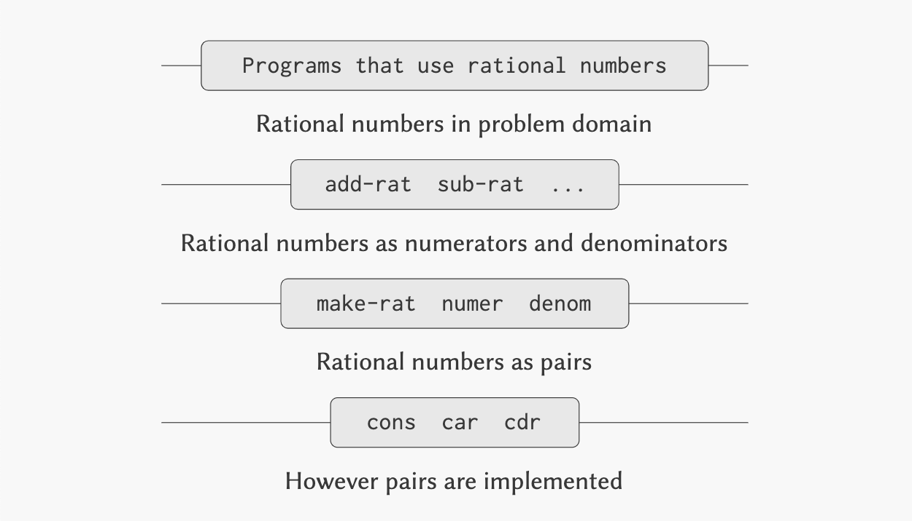
Figure: Data-abstraction barriers in the rational-number package.
(define (make-rat n d)
(cons n d))
(define (numer x)
(let ((g (gcd (car x) (cdr x))))
(/ (car x) g)))
(define (denom x)
(let ((g (gcd (car x) (cdr x))))
(/ (cdr x) g)))
Listing 2.4: an alternate way to reduce rational numbers to lowest terms
- Exercise 2.2
Consider the problem of representing line segments in a plane. Each segment is represented as a pair of points: a starting point and an ending point. Define a constructor make-segment and selectors start-segment and end-segment that define the representation of segments in terms of points. Furthermore, a point can be represented as a pair of numbers: the x coordinate and the y coordinate. Accordingly, specify a constructor make-point and selectors x-point and y-point that define this representation. Finally, using your selectors and constructors, define a procedure midpoint-segment that takes a line segment as argument and returns its midpoint (the point whose coordinates are the average of the coordinates of the endpoints). To try your procedures, you’ll need a way to print points:
(define (print-point p)
(newline)
(display "(")
(display (x-point p))
(display ",")
(display (y-point p))
(display ")"))
Listing 2.5: exercise-2-2-q
Solution
;;; point
(define (make-point x y) (cons x y))
(define (x-point p) (car p))
(define (y-point p) (cdr p))
(define (mid-point a b)
(make-point (average (x-point a) (x-point b))
(average (y-point a) (y-point b))))
;;; segment
(define (make-segment start-point end-point)
(cons start-point end-point))
(define (start-segment seg) (car seg))
(define (end-segment seg) (cdr seg))
(define (midpoint-segment seg)
(mid-point (start-segment seg)
(end-segment seg)))
Listing 2.6: exercise-2-2
<<common>>
<<exercise-2-2-q>>
<<exercise-2-2>>
(define a (make-point 0 2))
(define b (make-point 2 0))
(define s (make-segment a b))
(print-point (midpoint-segment s))
- Exercise 2.3
Implement a representation for rectangles in a plane. (Hint: You may want to make use of Exercise 22 (1).) In terms of your constructors and selectors, create procedures that compute the perimeter and the area of a given rectangle. Now implement a different representation for rectangles. Can you design your system with suitable abstraction barriers, so that the same perimeter and area procedures will work using either representation?
Solution
(define (distance-points p1 p2)
(sqrt (+ (square (- (x-point p1)
(x-point p2)))
(square (- (y-point p1)
(y-point p2))))))
(define (length-segment seg)
(distance-points (start-segment seg)
(end-segment seg)))
(define (min-segments seg1 seg2)
(let ((l1 (length-segment seg1))
(l2 (length-segment seg2)))
(if (< l2 l1) seg2 seg1)))
(define (max-segments seg1 seg2)
(let ((l1 (length-segment seg1))
(l2 (length-segment seg2)))
(if (> l2 l1) seg2 seg1)))
;;
;; +--------+
;; seg1 | |
;; | |
;; +--------+
;; seg2
;;
;; defined by two intersecting sides
;;
(define (make-rect seg1 seg2)
(cons (max-segments seg1 seg2)
(min-segments seg1 seg2)))
(define (length-rect rect) (car rect))
(define (breadth-rect rect) (cdr rect))
;; seg1
;; +--------+
;; | |
;; | |
;; +--------+
;; seg2
;;
;; defined by two parallel sides
;;
(define (make-rect-p seg1 seg2)
(let ((s1start (start-segment seg1))
(s2start (start-segment seg2))
(s2end (end-segment seg2)))
(let ((seg3 (make-segment s1start s2start))
(seg4 (make-segment s1start s2end)))
(make-rect seg1 (min-segments seg3 seg4)))))
(define (perimeter-rect r)
(* 2 (+ (length-segment (length-rect r))
(length-segment (breadth-rect r)))))
(define (area-rect r)
(* (length-segment (length-rect r))
(length-segment (breadth-rect r))))
Listing 2.7: exercise-2-3
<<common>>
<<exercise-2-2-q>>
<<exercise-2-2>>
<<exercise-2-3>>
;; s3
;; p4 (0,3) +--------+ p3 (5,3)
;; s1 | |
;; | |
;; p1 (0,0) +--------+ p2 (5,0)
;; s2
(define p1 (make-point 0 0))
(define p2 (make-point 5 0))
(define p3 (make-point 5 3))
(define p4 (make-point 0 3))
(define s1 (make-segment p1 p4))
(define s2 (make-segment p1 p2))
(define s3 (make-segment p4 p3))
(define r1 (make-rect s1 s2))
(define r2 (make-rect-p s2 s3))
(p (perimeter-rect r1))
(p (area-rect r1))
(p (perimeter-rect r2))
(p (area-rect r2))
2.1.3 What Is Meant by Data?
- what is meant by data?
we can think of data as defined by
- some collection of selectors and constructors, together with
- specified conditions that these procedures must fulfill in order to be a valid representation.
Make-rat, numer, and denom must satisfy the condition that, for any integer n and any non-zero integer d, if x is (make-rat n d), then \[ \frac{\text{(numer x)}}{\text{(denom x)}}=\frac{\text{n}}{\text{d}}. \]
The operations satisfy the condition that, for any objects x and y, if z is (cons x y) then (car z) is x and (cdr z) is y.
(define (cons x y)
(define (dispatch m)
(cond ((= m 0) x)
((= m 1) y)
(else
(error "Argument not 0 or 1:
CONS" m))))
dispatch)
(define (car z) (z 0))
(define (cdr z) (z 1))
Listing 2.8: implement cons, car, and cdr without using any data structures at all but only using procedures
- Exercise 2.4
Here is an alternative procedural representation of pairs. For this representation, verify that (car (cons x y)) yields x for any objects x and y.
(define (cons x y)
(lambda (m) (m x y)))
(define (car z)
(z (lambda (p q) p)))
Listing 2.9: exercise-2-4-q
What is the corresponding definition of cdr? (Hint: To verify that this works, make use of the substitution model of The Substitution Model for Procedure Application.)
Solution
;;(car (cons x y))
;;(car (lambda (p q) p))
;;((lambda (m) (m x y)) (lambda (p q) p))
;;((lambda (p q) p) x y)
;;x
(define (cdr z)
(z (lambda (p q) q)))
Listing 2.10: exercise-2-4
<<common>>
<<exercise-2-4-q>>
<<exercise-2-4>>
(define x (cons 1 2))
(p x)
(p (car x))
(p (cdr x))
#<procedure 105f775a0 at <unknown port>:16:2 (m)>
1
2
- Exercise 2.5
Show that we can represent pairs of nonnegative integers using only numbers and arithmetic operations if we represent the pair a and b as the integer that is the product \( 2^a3^b \). Give the corresponding definitions of the procedures cons, car, and cdr.
Solution
(define (cons a b)
(* (expt 2 a)
(expt 3 b)))
(define (largest-divisible-exponent n base)
(define (iter i)
(if (= (remainder n (expt base i)) 0)
(iter (+ i 1))
(- i 1)))
(iter 1))
(define (car n) (largest-divisible-exponent n 2))
(define (cdr n) (largest-divisible-exponent n 3))
Listing 2.11: exercise-2-5
<<common>>
<<exercise-2-5>>
(define a (cons 2 2))
(p a)
(p (car a))
(p (cdr a))
- Exercise 2.6
In case representing pairs as procedures wasn’t mind-boggling enough, consider that, in a language that can manipulate procedures, we can get by without numbers (at least insofar as nonnegative integers are concerned) by implementing 0 and the operation of adding 1 as
(define zero (lambda (f) (lambda (x) x)))
(define (add-1 n)
(lambda (f) (lambda (x) (f ((n f) x)))))
Listing 2.12: exercise-2-6-q
This representation is known as Church numerals, after its inventor, Alonzo Church, the logician who invented the λ-calculus.
Define one and two directly (not in terms of zero and add-1). (Hint: Use substitution to evaluate (add-1 zero)). Give a direct definition of the addition procedure + (not in terms of repeated application of add-1).
Solution
;; (add-1 zero)
;; (lambda (f) (lambda (x) (f ((zero f) x))))
;; (lambda (f) (lambda (x) (f x)))
(define one (lambda (f) (lambda (x) (f x))))
;; (add-1 one)
;; (lambda (f) (lambda (x) (f ((one f) x))))
;; (lambda (f) (lambda (x) (f (f x))))
(define two (lambda (f) (lambda (x) (f (f x)))))
(define (+ a b)
(lambda (f) (lambda (x) ((b f) ((a f) x)))))
Listing 2.13: exercise-2-6
<<common>>
<<exercise-2-6-q>>
<<exercise-2-6>>
(p "--zero--")
((zero p) 'hello)
(p "--one--")
((one p) 'hello)
(p "--two--")
((two p) 'hello)
(p "--three--")
(((+ one two) p) 'hello)
--zero--
--one--
hello
--two--
hello
hello
--three--
hello
hello
hello
2.1.4 Extended Exercise Interval Arithmetic
(define (add-interval x y)
(make-interval (+ (lower-bound x)
(lower-bound y))
(+ (upper-bound x)
(upper-bound y))))
(define (mul-interval x y)
(let ((p1 (* (lower-bound x)
(lower-bound y)))
(p2 (* (lower-bound x)
(upper-bound y)))
(p3 (* (upper-bound x)
(lower-bound y)))
(p4 (* (upper-bound x)
(upper-bound y))))
(make-interval (min p1 p2 p3 p4)
(max p1 p2 p3 p4))))
(define (div-interval x y)
(mul-interval x
(make-interval
(/ 1.0 (upper-bound y))
(/ 1.0 (lower-bound y)))))
- Exercise 2.7
Alyssa’s program is incomplete because she has not specified the implementation of the interval abstraction. Here is a definition of the interval constructor:
(define (make-interval a b) (cons a b))
Define selectors upper-bound and lower-bound to complete the implementation.
Solution
(define (make-interval a b) (cons a b))
(define (upper-bound n) (max (car n) (cdr n)))
(define (lower-bound n) (min (car n) (cdr n)))
Listing 2.14: exercise-2-7
- Exercise 2.8
Using reasoning analogous to Alyssa’s, describe how the difference of two intervals may be computed. Define a corresponding subtraction procedure, called sub-interval.
Solution
(define (sub-interval x y)
(let ((d1 (- (lower-bound x)
(lower-bound y)))
(d2 (- (lower-bound x)
(upper-bound y)))
(d3 (- (upper-bound x)
(lower-bound y)))
(d4 (- (upper-bound x)
(upper-bound y))))
(make-interval (min d1 d2 d3 d4)
(max d1 d2 d3 d4))))
Listing 2.15: exercise-2-8
- Exercise 2.9
The width of an interval is half of the difference between its upper and lower bounds. The width is a measure of the uncertainty of the number specified by the interval. For some arithmetic operations the width of the result of combining two intervals is a function only of the widths of the argument intervals, whereas for others the width of the combination is not a function of the widths of the argument intervals. Show that the width of the sum (or difference) of two intervals is a function only of the widths of the intervals being added (or subtracted). Give examples to show that this is not true for multiplication or division.
Solution
(define (width x)
(/ (- (upper-bound x)
(lower-bound x))
2.0))
Listing 2.16: exercise-2-9
<<common>>
<<interval>>
<<exercise-2-7>>
<<exercise-2-8>>
<<exercise-2-9>>
(define a (make-interval 1 5))
(define b (make-interval 2 9))
(display "width of a: ")
(display (width a))
(p "width of b: ")
(display (width b))
(p "width of a+b: ")
(display (width (add-interval a b)))
(p "width of a-b: ")
(display (width (sub-interval a b)))
(p "width of a*b: ")
(display (width (mul-interval a b)))
(p "width of a/b: ")
(display (width (div-interval a b)))
width of a: 2.0
width of b: 3.5
width of a+b: 5.5
width of a-b: 5.5
width of a*b: 21.5
width of a/b: 1.1944444444444444
We can draw conclusions about addition and subtraction
\[ \operatorname{width}(a \pm b) = \operatorname{width}(a) + \operatorname{width}(b). \]
- Exercise 2.10
Ben Bitdiddle, an expert systems programmer, looks over Alyssa’s shoulder and comments that it is not clear what it means to divide by an interval that spans zero. Modify Alyssa’s code to check for this condition and to signal an error if it occurs.
Solution
(define (div-interval x y)
(if (<= (* (upper-bound y)
(lower-bound y))
0)
(error "divide by an interval that spans zero")
(mul-interval x
(make-interval
(/ 1.0 (upper-bound y))
(/ 1.0 (lower-bound y))))))
Listing 2.17: exercise-2-10
<<common>>
<<interval>>
<<exercise-2-7>>
<<exercise-2-8>>
<<exercise-2-10>>
(div-interval (make-interval 2 9)
(make-interval -1 2))
ice-9/boot-9.scm:1669:16: In procedure raise-exception:
divide by an interval that spans zero
Entering a new prompt. Type `,bt' for a backtrace or `,q' to continue.
scheme@(guile-user) [1]>
- Exercise 2.11
In passing, Ben also cryptically comments: “By testing the signs of the endpoints of the intervals, it is possible to break mul-interval into nine cases, only one of which requires more than two multiplications.” Rewrite this procedure using Ben’s suggestion.
After debugging her program, Alyssa shows it to a potential user, who complains that her program solves the wrong problem. He wants a program that can deal with numbers represented as a center value and an additive tolerance; for example, he wants to work with intervals such as 3.5 ± 0.15 rather than [3.35, 3.65]. Alyssa returns to her desk and fixes this problem by supplying an alternate constructor and alternate selectors:
(define (make-center-width c w)
(make-interval (- c w) (+ c w)))
(define (center i)
(/ (+ (lower-bound i)
(upper-bound i))
2.0))
(define (width i)
(/ (- (upper-bound i)
(lower-bound i))
2.0))
Listing 2.18: exercise-2-11-q
Unfortunately, most of Alyssa’s users are engineers. Real engineering situations usually involve measurements with only a small uncertainty, measured as the ratio of the width of the interval to the midpoint of the interval. Engineers usually specify percentage tolerances on the parameters of devices, as in the resistor specifications given earlier.
Solution
The interval can be divided into 3 cases according to the symbol combination of two endpoints, nn np pp, then the two endpoints are multiplied by 9 cases.
Giving two intervals of \( [a,b],[p,q]: \)
\begin{array}{ccc}
nn nn &\rightarrow &[bq, ap] \\
nn np &\rightarrow &[aq, ap] \\
nn pp &\rightarrow &[aq, bp] \\
np nn &\rightarrow &[bp, ap] \\
np np &\rightarrow &[ap, bq] \\
np pp &\rightarrow &[aq, bq] \\
pp nn &\rightarrow &[bp, aq] \\
pp np &\rightarrow &[bp, bq] \\
pp pp &\rightarrow &[ap, bq] \\
\end{array}
(define (ltz? a b)
(and (< a 0) (<= b 0)))
(define (spz? a b)
(and (< a 0) (> b 0)))
(define (gtz? a b)
(and (>= a 0) (> b 0)))
(define (mul-interval x y)
(let ((a (lower-bound x))
(b (upper-bound x))
(p (lower-bound y))
(q (upper-bound y)))
(cond ((and (ltz? a b) (ltz? p q))
(make-interval (* b q) (* a p)))
((and (ltz? a b) (spz? p q))
(make-interval (* a q) (* a p)))
((and (ltz? a b) (gtz? p q))
(make-interval (* a q) (* b p)))
((and (spz? a b) (ltz? p q))
(make-interval (* b p) (* a p)))
((and (spz? a b) (spz? p q))
(make-interval (* a p) (* b q)))
((and (spz? a b) (gtz? p q))
(make-interval (* a q) (* b q)))
((and (gtz? a b) (ltz? p q))
(make-interval (* b p) (* a q)))
((and (gtz? a b) (spz? p q))
(make-interval (* b p) (* b q)))
((and (gtz? a b) (gtz? p q))
(make-interval (* a p) (* b q))))))
Listing 2.19: exercise-2-11
<<common>>
<<interval>>
<<exercise-2-7>>
<<exercise-2-8>>
<<exercise-2-11>>
(p (mul-interval (make-interval -2 -1)
(make-interval -5 3)))
- Exercise 2.12
Define a constructor make-center-percent that takes a center and a percentage tolerance and produces the desired interval. You must also define a selector percent that produces the percentage tolerance for a given interval. The center selector is the same as the one shown above.
Solution
(define (make-center-percent c p)
(let ((w (* c p)))
(make-center-width c w)))
(define (percent i)
(/ (width i) (center i)))
(define (print x)
(newline)
(display "[")
(display (lower-bound x))
(display ", ")
(display (upper-bound x))
(display "]"))
(define (print-cp x)
(newline)
(display (center x))
(display "±")
(display (* 100 (percent x)))
(display "%"))
(define (print-cw x)
(newline)
(display (center x))
(display "±")
(display (width x)))
Listing 2.20: exercise-2-12
<<common>>
<<interval>>
<<exercise-2-7>>
<<exercise-2-8>>
<<exercise-2-11-q>>
<<exercise-2-12>>
(define x (make-center-percent 5 0.1))
(p x)
(print x)
(print-cp x)
(print-cw x)
(4.5 . 5.5)
[4.5, 5.5]
5.0±10.0%
5.0±0.5
- Exercise 2.13
Show that under the assumption of small percentage tolerances there is a simple formula for the approximate percentage tolerance of the product of two intervals in terms of the tolerances of the factors. You may simplify the problem by assuming that all numbers are positive.
After considerable work, Alyssa P. Hacker delivers her finished system. Several years later, after she has forgotten all about it, she gets a frenzied call from an irate user, Lem E. Tweakit. It seems that Lem has noticed that the formula for parallel resistors can be written in two algebraically equivalent ways:
\[ \frac{R_1R_2}{R_1+R_2} \]
and
\[ \frac{1}{1/R_1+1/R_2}. \]
He has written the following two programs, each of which computes the parallel-resistors formula differently:
(define (par1 r1 r2)
(div-interval
(mul-interval r1 r2)
(add-interval r1 r2)))
(define (par2 r1 r2)
(let ((one (make-interval 1 1)))
(div-interval
one
(add-interval
(div-interval one r1)
(div-interval one r2)))))
Listing 2.21: exercise-2-13-q
Lem complains that Alyssa’s program gives different answers for the two ways of computing. This is a serious complaint.
Solution
\begin{array}{l}
[c_1(1-p_1),c_1(1+p_1)]\centerdot [c_2(1-p_2),c_2(1+p_2)] \\
=[c_1c_2-c_1c_2p_1-c_1c_2p_2+c_1c_2p_1p_2,\dotsc] \\
=[c_1c_2(1-p_1-p_2+p_1p_2),c_1c_2(1+p_1+p_2+p_1p_2)] \\
\overset{\text{误差很小}}{\approx} [c_1c_2(1-(p_1+p_2)),c_1c_2(1+p_1+p_2)]
\end{array}
- Exercise 2.14
Demonstrate that Lem is right. Investigate the behavior of the system on a variety of arithmetic expressions. Make some intervals A and B, and use them in computing the expressions A/A and A/B. You will get the most insight by using intervals whose width is a small percentage of the center value. Examine the results of the computation in center-percent form (see Exercise 212 (1)).
Solution
<<common>>
<<interval>>
<<exercise-2-7>>
<<exercise-2-8>>
<<exercise-2-11-q>>
<<exercise-2-12>>
<<exercise-2-13-q>>
(define x (make-center-percent 10 0.1))
(print-cp (par1 x x))
(print-cp (par2 x x))
(p "----")
(define A (make-center-percent 100 0.01))
(define B (make-center-percent 200 0.02))
(define C (make-center-percent 4 0.5))
(define D (make-center-percent 8 0.2))
(print-cp (div-interval A A))
(print-cp (div-interval A B))
(print-cp (div-interval C C))
(print-cp (div-interval C D))
5.2020202020202015±29.22330097087378%
5.0±10.0%
----
1.0002000200020003±1.9998000199980077%
0.5003001200480192±2.9994001199760016%
1.6666666666666667±80.0%
0.5729166666666666±63.63636363636363%
So Lem is right. An interval divided by itself will not produce [1,1], instead it will introduce uncertainty.
- Exercise 2.15
Eva Lu Ator, another user, has also noticed the different intervals computed by different but algebraically equivalent expressions. She says that a formula to compute with intervals using Alyssa’s system will produce tighter error bounds if it can be written in such a form that no variable that represents an uncertain number is repeated. Thus, she says, par2 is a “better” program for parallel resistances than par1. Is she right? Why?
Solution
Eva is right since the error isn’t reintroduced into the result in par2 as it is in par1.
- Exercise 2.16
Explain, in general, why equivalent algebraic expressions may lead to different answers. Can you devise an interval-arithmetic package that does not have this shortcoming, or is this task impossible? (Warning: This problem is very difficult.)
Solution
Because part of algebraic laws doesn’t work in interval arithmetic such as distributive law, self-division, and square.
2.2 Hierarchical Data and the Closure Property
- What is closure property?
An operation for combining data objects satisfies the closure property if the results of combining things with that operation can themselves be combined using the same operation.
Another explanation: a closure is an implementation technique for representing procedures with free variables.
- Why is closure property important?
Closure is the key to power in any means of combination because it permits us to create hierarchical structures—structures made up of parts, which themselves are made up of parts, and so on.
2.2.1 Representing Sequences
(define (list-ref items n)
(if (= n 0)
(car items)
(list-ref (cdr items)
(- n 1))))
(define (length items)
(if (null? items)
0
(+ 1 (length (cdr items)))))
(define (append list1 list2)
(if (null? list1)
list2
(cons (car list1)
(append (cdr list1) list2))))
(define (map proc items)
(if (null? items)
nil
(cons (proc (car items))
(map proc (cdr items)))))
- Exercise 2.17
Define a procedure last-pair that returns the list that contains only the last element of a given (nonempty) list:
(last-pair (list 23 72 149 34))
(34)
Solution
(define (last-pair items)
(if (null? (cdr items))
items
(last-pair (cdr items))))
Listing 2.23: exercise-2-17
<<common>>
<<list>>
<<exercise-2-17>>
(p (last-pair (list 23 72 149 34)))
- Exercise 2.18
Define a procedure reverse that takes a list as argument and returns a list of the same elements in reverse order:
(reverse (list 1 4 9 16 25))
(25 16 9 4 1)
Solution
(define (reverse items)
(define (iter items result)
(if (null? items)
result
(iter (cdr items)
(cons (car items) result))))
(iter items nil))
Listing 2.24: exercise-2-18
<<common>>
<<list>>
<<exercise-2-18>>
(p (reverse (list 1 4 9 16 25)))
- Exercise 2.19
Consider the change-counting program of Tree Recursion. It would be nice to be able to easily change the currency used by the program, so that we could compute the number of ways to change a British pound, for example. As the program is written, the knowledge of the currency is distributed partly into the procedure first-denomination and partly into the procedure count-change (which knows that there are five kinds of U.S. coins). It would be nicer to be able to supply a list of coins to be used for making change.
We want to rewrite the procedure cc so that its second argument is a list of the values of the coins to use rather than an integer specifying which coins to use. We could then have lists that defined each kind of currency:
(define us-coins
(list 50 25 10 5 1))
(define uk-coins
(list 100 50 20 10 5 2 1 0.5))
Listing 2.25: exercise-2-19-q1
We could then call cc as follows:
To do this will require changing the program cc somewhat. It will still have the same form, but it will access its second argument differently, as follows:
(define (cc amount coin-values)
(cond ((= amount 0)
1)
((or (< amount 0)
(no-more? coin-values))
0)
(else
(+ (cc amount
(except-first-denomination coin-values))
(cc (- amount (first-denomination coin-values))
coin-values)))))
Listing 2.26: exercise-2-19-q2
Define the procedures first-denomination, except-first-denomination and no-more? in terms of primitive operations on list structures. Does the order of the list coin-values affect the answer produced by cc? Why or why not?
Solution
(define first-denomination car)
(define except-first-denomination cdr)
(define no-more? null?)
Listing 2.27: exercise-2-19
<<common>>
<<count-change>>
<<exercise-2-19-q1>>
<<exercise-2-19-q2>>
<<exercise-2-19>>
(p (cc 100 us-coins))
- Exercise 2.20
The procedures +, *, and list take arbitrary numbers of arguments. One way to define such procedures is to use define with dotted-tail notation. In a procedure definition, a parameter list that has a dot before the last parameter name indicates that, when the procedure is called, the initial parameters (if any) will have as values the initial arguments, as usual, but the final parameter’s value will be a list of any remaining arguments. For instance, given the definition
(define (f x y . z) ⟨body⟩)
the procedure f can be called with two or more arguments. If we evaluate
then in the body of f, x will be 1, y will be 2, and z will be the list (3 4 5 6). Given the definition
the procedure g can be called with zero or more arguments. If we evaluate
then in the body of g, w will be the list (1 2 3 4 5 6).
Use this notation to write a procedure same-parity that takes one or more integers and returns a list of all the arguments that have the same even-odd parity as the first argument. For example,
(same-parity 1 2 3 4 5 6 7)
(1 3 5 7)
(same-parity 2 3 4 5 6 7)
(2 4 6)
Solution
(define (filter predicate items)
(define (iter items result)
(if (null? items)
result
(iter (cdr items)
(if (predicate (car items))
(cons (car items) result)
result))))
(reverse (iter items nil)))
(define (same-parity x . items)
(let ((pred (if (odd? x)
odd?
even?)))
(cons x (filter pred items))))
Listing 2.28: exercise-2-20
<<common>>
<<list>>
<<exercise-2-18>>
<<exercise-2-20>>
(p (same-parity 1 2 3 4 5 6 7))
(p (same-parity 2 3 4 5 6 7))
- Exercise 2.21
The procedure square-list takes a list of numbers as argument and returns a list of the squares of those numbers.
(square-list (list 1 2 3 4))
(1 4 9 16)
Here are two different definitions of square-list. Complete both of them by filling in the missing expressions:
(define (square-list items)
(if (null? items)
nil
(cons ⟨??⟩ ⟨??⟩)))
(define (square-list items)
(map ⟨??⟩ ⟨??⟩))
Solution
(define (square-list items)
(if (null? items)
nil
(cons (square (car items))
(square-list (cdr items)))))
(define (square-list items)
(map square items))
Listing 2.29: exercise-2-21
- Exercise 2.22
Louis Reasoner tries to rewrite the first square-list procedure of Exercise 221 (1) so that it evolves an iterative process:
(define (square-list items)
(define (iter things answer)
(if (null? things)
answer
(iter (cdr things)
(cons (square (car things))
answer))))
(iter items nil))
Unfortunately, defining square-list this way produces the answer list in the reverse order of the one desired. Why?
Louis then tries to fix his bug by interchanging the arguments to cons:
(define (square-list items)
(define (iter things answer)
(if (null? things)
answer
(iter (cdr things)
(cons answer
(square
(car things))))))
(iter items nil))
This doesn’t work either. Explain.
Solution
(square-list '(1 2 3 4))
;; 1
(cons 16 (cons 9 (cons 4 (cons 1 nil))))
;; 2
(cons (cons (cons (cons nil 1) 4) 9) 16)
- Exercise 2.23
The procedure for-each is similar to map. It takes as arguments a procedure and a list of elements. However, rather than forming a list of the results, for-each just applies the procedure to each of the elements in turn, from left to right. The values returned by applying the procedure to the elements are not used at all—~for-each~ is used with procedures that perform an action, such as printing. For example,
(for-each
(lambda (x) (newline) (display x))
(list 57 321 88))
57
321
88
The value returned by the call to for-each (not illustrated above) can be something arbitrary, such as true. Give an implementation of for-each.
Solution
(define (for-each procedure items)
(cond ((not (null? items))
(procedure (car items))
(for-each procedure (cdr items)))))
Listing 2.30: exercise-2-23
<<common>>
<<list>>
<<exercise-2-23>>
(for-each
(lambda (x) (newline) (display x))
(list 57 321 88))
2.2.2 Hierarchical Structures
(cons (list 1 2) (list 3 4))
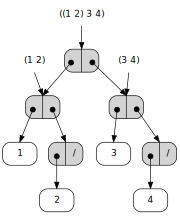
Figure: Structure formed by (cons (list 1 2) (list 3 4)).
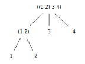
Figure 2.1: The list structure in viewed as a tree.
(define (count-leaves x)
(cond ((null? x) 0)
((not (pair? x)) 1)
(else (+ (count-leaves (car x))
(count-leaves (cdr x))))))
- Exercise 2.24
Suppose we evaluate the expression (list 1 (list 2 (list 3 4))). Give the result printed by the interpreter, the corresponding box-and-pointer structure, and the interpretation of this as a tree (as in Figure 2.1).
Solution
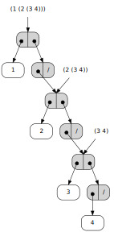
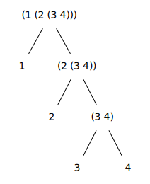
- Exercise 2.25
Give combinations of cars and cdrs that will pick 7 from each of the following lists:
(1 3 (5 7) 9)
((7))
(1 (2 (3 (4 (5 (6 7))))))
Solution
<<common>>
(define (a x) (car (cdaddr x)))
(define (b x) (caar x))
(define (c x) (cadadr (cadadr (cadadr x))))
(p (a '(1 3 (5 7) 9)))
(p (b '((7))))
(p (c '(1 (2 (3 (4 (5 (6 7))))))))
- Exercise 2.26
Suppose we define x and y to be two lists:
(define x (list 1 2 3))
(define y (list 4 5 6))
What result is printed by the interpreter in response to evaluating each of the following expressions:
(append x y)
(cons x y)
(list x y)
Solution
<<common>>
(define x (list 1 2 3))
(define y (list 4 5 6))
(p (append x y))
(p (cons x y))
(p (list x y))
(1 2 3 4 5 6)
((1 2 3) 4 5 6)
((1 2 3) (4 5 6))
- Exercise 2.27
Modify your reverse procedure of Exercise 218 (1) to produce a deep-reverse procedure that takes a list as argument and returns as its value the list with its elements reversed and with all sublists deep-reversed as well. For example,
(define x
(list (list 1 2) (list 3 4)))
x
((1 2) (3 4))
(reverse x)
((3 4) (1 2))
(deep-reverse x)
((4 3) (2 1))
Solution
(define (deep-reverse items)
(define (iter items result)
(if (null? items)
result
(let ((current (car items))
(rest (cdr items)))
(iter rest (cons (if (pair? current)
(deep-reverse current)
current)
result)))))
(iter items nil))
Listing 2.31: exercise-2-27
<<common>>
<<list>>
<<exercise-2-18>>
<<exercise-2-27>>
(define x (list (list 1 2) (list 3 4)))
(p x)
(p (reverse x))
(p (deep-reverse x))
((1 2) (3 4))
((3 4) (1 2))
((4 3) (2 1))
- Exercise 2.28
Write a procedure fringe that takes as argument a tree (represented as a list) and returns a list whose elements are all the leaves of the tree arranged in left-to-right order. For example,
(define x
(list (list 1 2) (list 3 4)))
(fringe x)
(1 2 3 4)
(fringe (list x x))
(1 2 3 4 1 2 3 4)
Solution
(define (fringe tree)
(define (leaf? x) (not (pair? x)))
(define (iter tree result)
(cond ((null? tree) result)
((leaf? tree) (cons tree result))
(else (iter (car tree)
(iter (cdr tree) result)))))
(iter tree nil))
Listing 2.32: exercise-2-28
<<common>>
<<exercise-2-28>>
(define x (list (list 1 2) (list 3 4)))
(p (fringe x))
(p (fringe (list x x)))
- Exercise 2.29
A binary mobile consists of two branches, a left branch and a right branch. Each branch is a rod of a certain length, from which hangs either a weight or another binary mobile. We can represent a binary mobile using compound data by constructing it from two branches (for example, using list):
(define (make-mobile left right)
(list left right))
A branch is constructed from a length (which must be a number) together with a structure, which may be either a number (representing a simple weight) or another mobile:
(define (make-branch length structure)
(list length structure))
- Write the corresponding selectors
left-branch and right-branch, which return the branches of a mobile, and branch-length and branch-structure, which return the components of a branch.
- Using your selectors, define a procedure
total-weight that returns the total weight of a mobile.
- A mobile is said to be balanced if the torque applied by its top-left branch is equal to that applied by its top-right branch (that is, if the length of the left rod multiplied by the weight hanging from that rod is equal to the corresponding product for the right side) and if each of the submobiles hanging off its branches is balanced. Design a predicate that tests whether a binary mobile is balanced.
- Suppose we change the representation of mobiles so that the constructors are
(define (make-mobile left right)
(cons left right))
(define (make-branch length structure)
(cons length structure))
How much do you need to change your programs to convert to the new representation?
Solution
;;; 1
(define (make-mobile left right) (list left right))
(define (left-branch mobile) (car mobile))
(define (right-branch mobile) (cadr mobile))
(define (make-branch length structure) (list length structure))
(define (branch-length branch) (car branch))
(define (branch-structure branch) (cadr branch))
;;; 2
(define mobile? pair?)
(define (branch-weight branch)
(let ((structure (branch-structure branch)))
(if (mobile? structure)
(total-weight structure)
structure)))
(define (total-weight mobile)
(+ (branch-weight (left-branch mobile))
(branch-weight (right-branch mobile))))
;;; 3
(define (branch-torque branch)
(* (branch-length branch)
(branch-weight branch)))
(define (branch-balanced? branch)
(let ((structure (branch-structure branch)))
(if (mobile? structure)
(balanced? structure)
#t)))
(define (balanced? mobile)
(let ((lb (left-branch mobile))
(rb (right-branch mobile)))
(and (= (branch-torque lb) (branch-torque rb))
(branch-balanced? lb)
(branch-balanced? rb))))
;;; 4
(define (make-mobile left right)
(cons left right))
(define (make-branch length structure)
(cons length structure))
(define (left-branch mobile) (car mobile))
(define (right-branch mobile) (cdr mobile))
(define (branch-length branch) (car branch))
(define (branch-structure branch) (cdr branch))
Listing 2.33: exercise-2-29
<<common>>
<<exercise-2-29>>
(define b1 (make-branch 2 4))
(define b2 (make-branch 1 8))
(define m1 (make-mobile b1 b2))
(define b3 (make-branch 3 m1))
(define b4 (make-branch 4 8))
(define m2 (make-mobile b3 b4))
(p (total-weight m2)) ;20
(p (total-weight m1)) ;12
(p (balanced? m2)) ;#f
(p (balanced? m1)) ;#t
- Mapping over trees
Map together with recursion is a powerful abstraction for dealing with trees.
(define (leaf? x) (not (pair? x)))
(define (tree? x) (pair? x))
(define (scale-tree tree factor)
(cond ((null? tree) nil)
(leaf? tree (* tree factor))
(else
(cons (scale-tree (car tree) factor)
(scale-tree (cdr tree) factor)))))
(define (scale-tree tree factor)
(map (lambda (sub-tree)
(if (tree? sub-tree)
(scale-tree sub-tree factor)
(* sub-tree factor)))
tree))
- Exercise 2.30
Define a procedure square-tree analogous to the square-list procedure of Exercise 221 (1). That is, square-tree should behave as follows:
(square-tree
(list 1
(list 2 (list 3 4) 5)
(list 6 7)))
(1 (4 (9 16) 25) (36 49))
Define square-tree~ both directly (i.e., without using any higher-order procedures) and also by using map and recursion.
Solution
(define (leaf? x) (not (pair? x)))
(define (tree? x) (pair? x))
(define (square-tree tree)
(cond ((null? tree) nil)
((leaf? tree) (square tree))
(else
(cons (square-tree (car tree))
(square-tree (cdr tree))))))
Listing 2.35: exercise-2-30-1
(define (leaf? x) (not (pair? x)))
(define (tree? x) (pair? x))
(define (square-tree tree)
(map (lambda (subtree)
(if (tree? subtree)
(square-tree subtree)
(square subtree)))
tree))
Listing 2.36: exercise-2-30-2
<<common>>
<<exercise-2-30-1>>
(p (square-tree
(list 1
(list 2 (list 3 4) 5)
(list 6 7))))
<<exercise-2-30-2>>
(p (square-tree
(list 1
(list 2 (list 3 4) 5)
(list 6 7))))
(1 (4 (9 16) 25) (36 49))
(1 (4 (9 16) 25) (36 49))
- Exercise 2.31
Abstract your answer to Exercise 230 (1) to produce a procedure tree-map with the property that square-tree could be defined as
(define (square-tree tree)
(tree-map square tree))
Solution
(define (leaf? tree) (not (pair? tree)))
(define (tree-map proc tree)
(cond ((null? tree) nil)
((leaf? tree) (proc tree))
(else
(cons (tree-map proc (car tree))
(tree-map proc (cdr tree))))))
(define (tree-map proc tree)
(map (lambda (subtree)
(if (pair? subtree)
(tree-map proc subtree)
(proc subtree)))
tree))
Listing 2.37: exercise-2-31
<<common>>
<<exercise-2-31>>
(define (square-tree tree)
(tree-map square tree))
(p (square-tree
(list 1
(list 2 (list 3 4) 5)
(list 6 7))))
(1 (4 (9 16) 25) (36 49))
- Exercise 2.32
We can represent a set as a list of distinct elements, and we can represent the set of all subsets of the set as a list of lists. For example, if the set is (1 2 3), then the set of all subsets is (() (3) (2) (2 3) (1) (1 3) (1 2) (1 2 3)). Complete the following definition of a procedure that generates the set of subsets of a set and give a clear explanation of why it works:
(define (subsets s)
(if (null? s)
(list nil)
(let ((rest (subsets (cdr s))))
(append rest (map ⟨??⟩ rest)))))
Solution
The set of subsets of a given set is the union of:
A. the set of all subsets excluding the first number.
B. the set of all subsets including the first number, i.e., bullet A subsets with the first number re-inserted into each subset.
The whole explanation is:
Step 1: given the set (3). Bullet A gives the subset (), and bullet B gives (3). Step 1 result is (), (3).
Step 2: given the set (2, 3). Bullet A gives the subsets of step 1 result, (), (3). Bullet B gives the subsets of step 1 result with 2 insert into each subset, (2), (2, 3). Step 2 result is (), (3), (2), (2, 3).
Step 3: given the set (1, 2, 3). Bullet A gives the subsets of Step 2, (), (3), (2), (2, 3). Bullet B gives subsets of step 2 with 1 insert into each subset, (1), (1, 3), (1, 2), (1, 2, 3).
(define (subsets s)
(if (null? s)
(list nil)
(let ((rest (subsets (cdr s))))
(append rest (map (lambda (x)
(cons (car s) x))
rest)))))
Listing 2.38: exercise-2-32
<<common>>
<<exercise-2-32>>
(p (subsets '(1 2 3)))
(() (3) (2) (2 3) (1) (1 3) (1 2) (1 2 3))
2.2.3 Sequences as Conventional Interfaces
- What are the benefits of sequences as conventional interfaces?
Sequences, implemented here as lists, serve as a conventional interface that permits us to combine processing modules.
Additionally, when we uniformly represent structures as sequences, we have localized the data-structure dependencies in our programs to a small number of sequence operations.By changing these, we can experiment with alternative representations of sequences, while leaving the overall design of our programs intact.
- What is the key to organizing programs so as to more clearly reflect the signal-flow structure?
Concentrate on the “signals” that flow from one stage in the process to the next.
(define (filter predicate sequence)
(cond ((null? sequence) nil)
((predicate (car sequence))
(cons (car sequence)
(filter predicate
(cdr sequence))))
(else (filter predicate
(cdr sequence)))))
(define (accumulate op initial sequence)
(if (null? sequence)
initial
(op (car sequence)
(accumulate op
initial
(cdr sequence)))))
(define (enumerate-interval low high)
(if (> low high)
nil
(cons low
(enumerate-interval
(+ low 1)
high))))
(define (enumerate-tree tree)
(cond ((null? tree) nil)
((not (pair? tree)) (list tree))
(else (append
(enumerate-tree (car tree))
(enumerate-tree (cdr tree))))))
Listing 2.39: sequence-operations
- Exercise 2.33
Fill in the missing expressions to complete the following definitions of some basic list-manipulation operations as accumulations:
(define (map p sequence)
(accumulate (lambda (x y) ⟨??⟩)
nil sequence))
(define (append seq1 seq2)
(accumulate cons ⟨??⟩ ⟨??⟩))
(define (length sequence)
(accumulate ⟨??⟩ 0 sequence))
Solution
(define (map p sequence)
(accumulate (lambda (x y) (p x))
nil sequence))
(define (append seq1 seq2)
(accumulate cons seq2 seq1))
(define (length sequence)
(accumulate (lambda (x y) (+ 1 y)) 0 sequence))
Listing 2.40: exercise-2-33
<<common>>
<<list>>
<<sequence-operations>>
<<exercise-2-33>>
(map display '(1 2 3))
(p (append '(1 2 3) '(4 5 6)))
(p (length '(1 2 3)))
- Exercise 2.34
Evaluating a polynomial in \( x \) at a given value of \( x \) can be formulated as an accumulation. We evaluate the polynomial
\[ a_nx^n + a_{n-1}x^{n-1} + \dotsb + a_1x + a_0 \]
using a well-known algorithm called Horner’s rule, which structures the computation as
\[ (\dots(a_nx+a_{n-1})x+\dotsb +a_1)x + a_0. \]
In other words, we start with \( a_n \) , multiply by \( x \), add \( a_{n-1} \) , multiply by \( x \), and so on, until we reach \( a_0 \).
Fill in the following template to produce a procedure that evaluates a polynomial using Horner’s rule. Assume that the coefficients of the polynomial are arranged in a sequence, from \( a_0 \) through \( a_n \).
(define
(horner-eval x coefficient-sequence)
(accumulate
(lambda (this-coeff higher-terms)
⟨??⟩)
0
coefficient-sequence))
For example, to compute \( 1+3x +5x^3 +x^5 \) at \( x = 2 \) you would evaluate
(horner-eval 2 (list 1 3 0 5 0 1))
Solution
(define
(horner-eval x coefficient-sequence)
(accumulate
(lambda (this-coeff higher-terms)
(+ this-coeff
(* x higher-terms)))
0
coefficient-sequence))
Listing 2.41: exercise-2-34
<<common>>
<<list>>
<<sequence-operations>>
<<exercise-2-34>>
(p (horner-eval 2 (list 1 3 0 5 0 1)))
- Exercise 2.35
Redefine count-leaves from Hierarchical Structures as an accumulation:
(define (count-leaves t)
(accumulate ⟨??⟩ ⟨??⟩ (map ⟨??⟩ ⟨??⟩)))
Solution
(define (count-leaves t)
(accumulate + 0 (map (lambda (x) 1)
(enumerate-tree t))))
Listing 2.42: exercise-2-35
<<common>>
<<sequence-operations>>
<<exercise-2-35>>
(p (count-leaves '(1 (2 3 4) (5 6) (7))))
- Exercise 2.36
The procedure accumulate-n is similar to accumulate except that it takes as its third argument a sequence of sequences, which are all assumed to have the same number of elements. It applies the designated accumulation procedure to combine all the first elements of the sequences, all the second elements of the sequences, and so on, and returns a sequence of the results. For instance, if s is a sequence containing four sequences, ((1 2 3) (4 5 6) (7 8 9) (10 11 12)), then the value of (accumulate-n + 0 s) should be the sequence (22 26 30). Fill in the missing expressions in the following definition of accumulate-n:
(define (accumulate-n op init seqs)
(if (null? (car seqs))
nil
(cons (accumulate op init ⟨??⟩)
(accumulate-n op init ⟨??⟩))))
Solution
(define (accumulate-n op init seqs)
(if (null? (car seqs))
nil
(cons (accumulate op init
(map (lambda (x) (car x)) seqs))
(accumulate-n op init
(map (lambda (x) (cdr x)) seqs)))))
Listing 2.43: exercise-2-36
<<common>>
<<list>>
<<sequence-operations>>
<<exercise-2-36>>
(p (accumulate-n + 0
'((1 2 3) (4 5 6) (7 8 9) (10 11 12))))
- Exercise 2.37
Suppose we represent vectors \( \mathbf{v} = (v_i) \) as sequences of numbers, and matrices \( \mathbf{m} = (m_{ij}) \) as sequences of vectors (the rows of the matrix). For example, the matrix
\begin{bmatrix}
1 & 2 & 3 & 4 \\
4 & 5 & 6 & 6 \\
6 & 7 & 8 & 9
\end{bmatrix}
is represented as the sequence ((1 2 3 4) (4 5 6 6) (6 7 8 9)). With this representation, we can use sequence operations to concisely express the basic matrix and vector operations. These operations (which are described in any book on matrix algebra) are the following:
\begin{array}{rl}
\text{(dot-product v w)} & \text{returns the sum}\
\sum_i v_iw_i; \\
\text{(matrix-*-vector m v)}
& \text{returns the vector}\ \mathbf{t},\
\text{where}\ t_i=\sum_jm_{ij}v_j; \\
\text{(matrix-*-matrix m n)}
& \text{returns the matrix}\ \mathbf{p},\
\text{where}\ p_{ij}=\sum_km_{ik}n_{kj}; \\
\text{(transpose m)} & \text{returns the matrix}\ \mathbf{n},\
\text{where}\ n_{ij}=m_{ji}.
\end{array}
We can define the dot product as
(define (dot-product v w)
(accumulate + 0 (map * v w)))
Fill in the missing expressions in the following procedures for computing the other matrix operations. (The procedure accumulate-n is defined in Exercise 236 (1).)
(define (matrix-*-vector m v)
(map (lambda (row) accumulate ) m))
(define (transpose mat)
(accumulate-n ⟨??⟩ ⟨??⟩ mat))
(define (matrix-*-matrix m n)
(let ((cols (transpose n)))
(map ⟨??⟩ m)))
Solution
(matrix-*-vector m v)
\begin{align*}
\begin{bmatrix}
1 & 2 & 3 \\
4 & 5 & 6 \\
\end{bmatrix}
\cdot
\begin{bmatrix}
10 \\ 11 \\ 12
\end{bmatrix}
&=
10 \cdot \begin{bmatrix}
1 \\ 4
\end{bmatrix} +
11 \cdot \begin{bmatrix}
2 \\ 5
\end{bmatrix} +
12 \cdot \begin{bmatrix}
3 \\ 6
\end{bmatrix} \\
&=
\begin{bmatrix}
10*1+11*2+12*3 \\
10*4+11*5+12*6
\end{bmatrix} \\
&=
\begin{bmatrix}
68 \\167
\end{bmatrix}
\end{align*}
(define (dot-product v w)
(accumulate + 0 (map * v w)))
(define (matrix-*-vector m v)
(map (lambda (row)
(dot-product row v))
m))
(define (transpose mat)
(accumulate-n cons nil mat))
(define (matrix-*-matrix m n)
(let ((cols (transpose n)))
(map (lambda (row)
(matrix-*-vector cols row))
m)))
Listing 2.44: exercise-2-37
(define scheme-map map)
<<common>>
<<list>>
<<sequence-operations>>
<<exercise-2-36>>
<<exercise-2-37>>
(define map scheme-map)
(define m1 '((1 2 3) (4 5 6)))
(define m2 '((1 2) (4 5) (6 7)))
(define v '(10 11 12))
(p (dot-product v v))
(p (matrix-*-vector m1 v))
(p (transpose m1))
(p (matrix-*-matrix m1 m2))
365
(68 167)
((1 4) (2 5) (3 6))
((27 33) (60 75))
- Exercise 2.38
The accumulate procedure is also known as fold-right, because it combines the first element of the sequence with the result of combining all the elements to the right. There is also a fold-left, which is similar to fold-right, except that it combines elements working in the opposite direction:
(define (fold-left op initial sequence)
(define (iter result rest)
(if (null? rest)
result
(iter (op result (car rest))
(cdr rest))))
(iter initial sequence))
Listing 2.45: exercise-2-38-q
What are the values of
(fold-right / 1 (list 1 2 3))
(fold-left / 1 (list 1 2 3))
(fold-right list nil (list 1 2 3))
(fold-left list nil (list 1 2 3))
Give a property that op should satisfy to guarantee that fold-right and fold-left will produce the same values for any sequence.
Solution
(define fold-right accumulate)
(define (fold-left op initial sequence)
(define (iter result rest)
(if (null? rest)
result
(iter (op result (car rest))
(cdr rest))))
(iter initial sequence))
Listing 2.46: exercise-2-38
<<common>>
<<list>>
<<sequence-operations>>
<<exercise-2-38>>
(p (fold-right / 1 (list 1 2 3)))
(p (fold-left / 1 (list 1 2 3)))
(p (fold-right list nil (list 1 2 3)))
(p (fold-left list nil (list 1 2 3)))
3/2
1/6
(1 (2 (3 ())))
(((() 1) 2) 3)
Suppose (fold-right f i '(a)) = (fold-left f i '(a)), then
(fold-right f i '(a)) = (f a i)
(fold-left f i '(a)) = (f i a)
so (f a i) = (f i a), commutative is required.
Also
(fold-right f i '(a b))
= (f (f i a) b)
= (f (f a i) b)
(fold-left f i '(a b))
= (f a (f b i))
= (f a (f i b))
so (f (f a i) b) = (f a (f i b)), associative is required.
- Exercise 2.39
Complete the following definitions of reverse (Exercise 218 (1)) in terms of fold-right and fold-left from Exercise 238 (1):
(define (reverse sequence)
(fold-right
(lambda (x y) ⟨??⟩) nil sequence))
(define (reverse sequence)
(fold-left
(lambda (x y) ⟨??⟩) nil sequence))
Solution
(define (reverse sequence)
(fold-right (lambda (first result)
(append result (list first)))
nil
sequence))
Listing 2.47: exercise-2-39-1
(define (reverse sequence)
(fold-left (lambda (result first)
(cons first result))
nil
sequence))
Listing 2.48: exercise-2-39-2
<<common>>
<<list>>
<<sequence-operations>>
<<exercise-2-38>>
<<exercise-2-39-1>>
(p (reverse '(1 2 3)))
<<exercise-2-39-2>>
(p (reverse '(1 2 3)))
- Nested Mappings
- How to extend the sequence paradigm to include many computations that are commonly expressed using nested loops?
(define (flatmap proc seq)
(accumulate append nil (map proc seq)))
(define (prime-sum? pair)
(prime? (+ (car pair) (cadr pair))))
(define (make-pair-sum pair)
(list (car pair)
(cadr pair)
(+ (car pair) (cadr pair))))
(define (unique-pairs n)
(flatmap
(lambda (i)
(map (lambda (j) (list i j))
(enumerate-interval 1 (- i 1))))
(enumerate-interval 1 n)))
(define (prime-sum-pairs n)
(map make-pair-sum
(filter prime-sum? (unique-pairs n))))
Listing 2.50: prime-sum-pairs
See also unique-triples.
Two nested map form two layers of lists, append removes a layer:
<<common>>
<<list>>
<<sequence-operations>>
(define (cons-to n)
(accumulate
cons
nil
(map (lambda (i)
(map (lambda (j)
;; (() ((2 1)) ((3 1) (3 2))
(list i j))
;; (() (1) (1 2))
(enumerate-interval 1 (- i 1))))
;; (1 2 3)
(enumerate-interval 1 n))))
(p (cons-to 3))
(define (append-to n)
(accumulate
append
nil
(map (lambda (i)
(map (lambda (j)
(list i j))
(enumerate-interval 1 (- i 1))))
(enumerate-interval 1 n))))
(p (append-to 3))
(() ((2 1)) ((3 1) (3 2)))
((2 1) (3 1) (3 2))
Here is a plan for generating the permutations of S: For each item x in S, recursively generate the sequence of permutations of S−x, and adjoin x to the front of each one. This yields, for each x in S, the sequence of permutations of S that begin with x. Combining these sequences for all x gives all the permutations of S:

(define (permutations s)
(if (null? s) ; empty set?
(list nil) ; sequence containing empty set
(flatmap (lambda (x)
(map (lambda (p)
(cons x p))
(permutations
(remove x s))))
s)))
(define (remove item sequence)
(filter (lambda (x) (not (eq? x item)))
sequence))
Listing 2.51: permutations
See also Exercise 232 (1).
<<common>>
<<list>>
<<sequence-operations>>
<<flatmap>>
<<permutations>>
(p (permutations '(a b c)))
- Exercise 2.40
Define a procedure unique-pairs that, given an integer n, generates the sequence of pairs \( (i,j) \) with \( 1 \leq j < i \leq n \). Use unique-pairs to simplify the definition of prime-sum-pairs given above.
Solution
(define (unique-pairs n)
(flatmap (lambda (i)
(map (lambda (j) (list i j))
(enumerate-interval 1 (- i 1))))
(enumerate-interval 1 n)))
(define (prime-sum-pairs n)
(map make-pair-sum
(filter prime-sum? (unique-pairs n))))
Listing 2.52: exercise-2-40
<<common>>
<<searching-for-divisors>>
<<list>>
<<sequence-operations>>
<<flatmap>>
<<prime-sum-pairs>>
<<exercise-2-40>>
(p (prime-sum-pairs 5))
((2 1 3) (3 2 5) (4 1 5) (4 3 7) (5 2 7))
- Exercise 2.41
Write a procedure to find all ordered triples of distinct positive integers i, j, and k less than or equal to a given integer n that sum to a given integer s.
Solution
\[ 1 \leq k < j < i \leq n \]
(define (unique-triples n)
(flatmap
(lambda (i)
(flatmap
(lambda (j)
(map (lambda (k)
(list i j k))
(enumerate-interval 1 (- j 1))))
(enumerate-interval 1 (- i 1))))
(enumerate-interval 1 n)))
(define (sum-triples n s)
(define (specified-sum? triples)
(= (accumulate + 0 triples) s))
(filter specified-sum? (unique-triples n)))
Listing 2.53: exercise-2-41
<<common>>
<<list>>
<<sequence-operations>>
<<flatmap>>
<<exercise-2-41>>
(p (unique-triples 5))
(p (sum-triples 5 9))
((3 2 1) (4 2 1) (4 3 1) (4 3 2) (5 2 1) (5 3 1) (5 3 2) (5 4 1) (5 4 2) (5 4 3))
((4 3 2) (5 3 1))
- Exercise 2.42
The “eight-queens puzzle” asks how to place eight queens on a chessboard so that no queen is in check from any other (i.e., no two queens are in the same row, column, or diagonal). One possible solution is shown in Figure 2.8. One way to solve the puzzle is to work across the board, placing a queen in each column. Once we have placed k-1 queens, we must place the \( k^{th} \) queen in a position where it does not check any of the queens already on the board. We can formulate this approach recursively: Assume that we have already generated the sequence of all possible ways to place k-1 queens in the first k-1 columns of the board. For each of these ways, generate an extended set of positions by placing a queen in each row of the \( k^{th} \) column. Now filter these, keeping only the positions for which the queen in the \( k^{th} \) column is safe with respect to the other queens. This produces the sequence of all ways to place k queens in the first k columns. By continuing this process, we will produce not only one solution, but all solutions to the puzzle.
| . | . | . | . | . | Q | . | . |
| . | . | Q | . | . | . | . | . |
| Q | . | . | . | . | . | . | . |
| . | . | . | . | . | . | Q | . |
| . | . | . | . | . | . | . | . |
| . | . | . | . | Q | . | . | . |
| . | Q | . | . | . | . | . | Q |
| . | . | . | Q | . | . | . | . |
We implement this solution as a procedure queens, which returns a sequence of all solutions to the problem of placing n queens on an n*n chessboard. Queens has an internal procedure queen-cols that returns the sequence of all ways to place queens in the first k columns of the board.
(define (queens board-size)
(define (queen-cols k)
(if (= k 0)
(list empty-board)
(filter
(lambda (positions) (safe? k positions))
(flatmap
(lambda (rest-of-queens)
;; rest-of-queens is (Q1 Q2 .. Qk-1)
;; map below generates ((Q1 .. Qk-1 Qk_row1) (Q1 .. Qk_row2) ..)
;; makes rest-of-queens two level list
(map (lambda (new-row)
(adjoin-position
new-row k rest-of-queens))
(enumerate-interval 1 board-size)))
;; (queen-cols (- k 1)) is ((Q1 Q2 .. Qk-1) (Q1 Q2 .. Qk-1) ..)
(queen-cols (- k 1))))))
(queen-cols board-size))
Listing 2.54: exercise-2-42-q
In this procedure rest-of-queens is a way to place k-1 queens in the first k-1 columns, and new-row is a proposed row in which to place the queen for the \( k^{th} \) column. Complete the program by implementing the representation for sets of board positions, including the procedure adjoin-position, which adjoins a new row-column position to a set of positions, and empty-board, which represents an empty set of positions. You must also write the procedure safe?, which determines for a set of positions, whether the queen in the \( k^{th} \) column is safe with respect to the others. (Note that we need only check whether the new queen is safe—the other queens are already guaranteed safe with respect to each other.)
Solution
(define (queens board-size)
(define (queen-cols k)
(if (= k 0)
(list empty-board)
(filter
(lambda (positions) (safe? k positions))
(flatmap
(lambda (rest-of-queens)
(map (lambda (new-row)
(adjoin-position
new-row k rest-of-queens))
(enumerate-interval 1 board-size)))
(queen-cols (- k 1))))))
(queen-cols board-size))
;; (((row8 col8) (row7 col7) ...) ...)
(define (safe? k positions)
(let ((trial (car positions))
(trial-row (caar positions))
(trial-col (cadar positions))
(rest (cdr positions)))
(accumulate (lambda (current result)
(let ((row (car current))
(col (cadr current)))
(and (not (= (- trial-row trial-col)
(- row col)))
(not (= (+ trial-row trial-col)
(+ row col)))
(not (= trial-row row))
result)))
true
rest)))
(define (adjoin-position row col rest)
(cons (list row col) rest))
(define empty-board '())
Listing 2.55: exercise-2-42a
<<common>>
<<list>>
<<sequence-operations>>
<<flatmap>>
<<exercise-2-42-q>>
<<exercise-2-42a>>
(p (queens 4))
(((3 4) (1 3) (4 2) (2 1)) ((2 4) (4 3) (1 2) (3 1)))
- Exercise 2.43
Louis Reasoner is having a terrible time doing Exercise 242 (1). His queens procedure seems to work, but it runs extremely slowly. (Louis never does manage to wait long enough for it to solve even the \( 6 \times 6 \) case.) When Louis asks Eva Lu Ator for help, she points out that he has interchanged the order of the nested mappings in the flatmap, writing it as
(flatmap
(lambda (new-row)
(map (lambda (rest-of-queens)
(adjoin-position
new-row k rest-of-queens))
(queen-cols (- k 1))))
(enumerate-interval 1 board-size))
Explain why this interchange makes the program run slowly. Estimate how long it will take Louis’s program to solve the eight-queens puzzle, assuming that the program in Exercise 242 (1) solves the puzzle in time T.
Solution
Q(k): number of solutions of board size k
T(k): number of steps required to calculate Q(k)
original approach: T(k) = T(k-1) + k * Q(k-1)
T(0) = 1
louis’s approach: T(k) = k * (T(k-1) + Q(k-1)) = k * T(k-1) + k * Q(k-1)
T(0) = 1
2.2.4 Example A Picture Language
(define (right-split painter n)
(if (= n 0)
painter
(let ((smaller (right-split painter (- n 1))))
(beside painter
(below smaller smaller)))))
(define (corner-split painter n)
(if (= n 0)
painter
(let ((up (up-split painter (- n 1)))
(right (right-split painter (- n 1))))
(let ((top-left (beside up up))
(bottom-right (below right
right))
(corner (corner-split painter (- n 1))))
(beside (below painter top-left)
(below bottom-right
corner))))))
(define (square-limit painter n)
(let ((quarter (corner-split painter n)))
(let ((half (beside (flip-horiz quarter)
quarter)))
(below (flip-vert half) half))))
Listing 2.56: square-limit
- Exercise 2.44
Define the procedure up-split used by corner-split. It is similar to right-split, except that it switches the roles of below and beside.
Solution
+----+----+
| | |
| n-1| n-1|
+----+----+
| |
| |
+---------+
(define (up-split painter n)
(if (= n 0)
painter
(let ((smaller (up-split painter (- n 1))))
(below (beside smaller smaller)
painter))))
Listing 2.57: exercise-2-44
<<square-limit>>
<<exercise-2-44>>
(paint (up-split einstein 4))
- Higher-order operations
(define (square-of-four tl tr bl br)
(lambda (painter)
(let ((top (beside (tl painter)
(tr painter)))
(bottom (beside (bl painter)
(br painter))))
(below bottom top))))
(define (square-limit painter n)
(let ((combine4
(square-of-four flip-horiz
identity
rotate180
flip-vert)))
(combine4 (corner-split painter n))))
Listing 2.58: square-of-four
- Exercise 2.45
Right-split and up-split can be expressed as instances of a general splitting operation. Define a procedure split with the property that evaluating
(define right-split (split beside below))
(define up-split (split below beside))
Listing 2.59: exercise-2-45-q
produces procedures right-split and up-split with the same behaviors as the ones already defined.
Solution
(define (split outer inner)
(define (do-split painter n)
(if (= n 0)
painter
(let ((smaller
(do-split painter (- n 1))))
(outer painter
(inner smaller smaller)))))
do-split)
Listing 2.60: exercise-2-45
<<pict>>
<<exercise-2-45>>
<<exercise-2-45-q>>
(paint (right-split einstein 2))
(paint (up-split einstein 2))

- Frames
origin + transform \( \cdot \) v = v in frame
- Exercise 2.46
A two-dimensional vector v running from the origin to a point can be represented as a pair consisting of an x-coordinate and a y-coordinate. Implement a data abstraction for vectors by giving a constructor make-vect and corresponding selectors xcor-vect and ycor-vect. In terms of your selectors and constructor, implement procedures add-vect, sub-vect, and scale-vect that perform the operations vector addition, vector subtraction, and multiplying a vector by a scalar:
\begin{align*}
(x_1 ,y_1 ) + (x_2 ,y_2 ) &= (x_1 + x_2 ,y_1 + y_2 ), \\
(x_1 ,y_1 ) − (x_2 ,y_2 ) &= (x_1 − x_2 ,y_1 − y_2 ), \\
s \cdot (x,y) &= (sx, sy).
\end{align*}
Solution
(define (make-vect x y) (list x y))
(define (xcor-vect v) (car v))
(define (ycor-vect v) (cadr v))
(define (add-vect v1 v2) (map + v1 v2))
(define (sub-vect v1 v2) (map - v1 v2))
(define (scale-vect s v) (map (lambda (cor) (* s cor)) v))
Listing 2.61: exercise-2-46
<<common>>
<<exercise-2-46>>
(define a (make-vect 1 2))
(define b (make-vect 3 4))
(p (xcor-vect a))
(p (ycor-vect b))
(p (add-vect a b))
(p (sub-vect a b))
(p (scale-vect 3 a))
- Exercise 2.47
Here are two possible constructors for frames:
(define (make-frame origin edge1 edge2)
(list origin edge1 edge2))
(define (make-frame origin edge1 edge2)
(cons origin (cons edge1 edge2)))
For each constructor supply the appropriate selectors to produce an implementation for frames.
Solution
(define (origin-frame f) (car f))
(define (edge1-frame f) (cadr f))
(define (edge2-frame f) (caddr f))
(define (origin-frame f) (car f))
(define (edge1-frame f) (cadr f))
(define (edge2-frame f) (cddr f))
- Painters
3 Computing with Register Machines
To explain the meanings of these procedures, we used a succession of models of evaluation:
- the substitution model of Chapter 1,
- the environment model of Chapter 3,
- and the metacircular evaluator of Chapter 4.
Our examination of the metacircular evaluator, in particular, dispelled much of the mystery of how Lisp-like languages are interpreted.
it fails to elucidate the mechanisms of control in a Lisp system. For instance, the evaluator does not explain how the evaluation of a subexpression manages to return a value to the expression that uses this value, nor does the evaluator explain how some recursive procedures generate iterative processes (that is, are evaluated using constant space) whereas other recursive procedures generate recursive processes.
These questions remain unanswered because the metacircular evaluator is itself a Lisp program and hence inherits the control structure of the underlying Lisp system. In order to provide a more complete description of the control structure of the Lisp evaluator, we must work at a more primitive level than Lisp itself.
or register machine, sequentially executes instructions that manipulate the contents of a fixed set of storage elements called registers. A typical register-machine instruction applies a primitive operation to the contents of some registers and assigns the result to another register.
we will approach our task from the perspective of a hardware architect rather than that of a machine-language computer programmer.
In designing register machines, we will develop mechanisms for implementing important programming constructs such as recursion. We will also present a language for describing designs for register machines. In 5.2 we will implement a Lisp program that uses these descriptions to simulate the machines we design.
we will also use the memory operations car, cdr, and cons, which require an elaborate storage-allocation mechanism. In 5.3 we study their implementation in terms of more elementary operations.
design a machine that carries out the algorithm described by the metacircular evaluator of 4.1.
This will fill in the gap in our understanding of how Scheme expressions are interpreted, by providing an explicit model for the mechanisms of control in the evaluator.
In 5.5 we will study a simple compiler that translates Scheme programs into sequences of instructions that can be executed directly with the registers and operations of the evaluator register machine.
3.1 Designing Register Machines
To design a register machine, we must design its data paths (registers and operations) and the controller that sequences these operations.
To illustrate the design of a simple register machine
(define (gcd a b)
(if (= b 0)
a
(gcd b (remainder a b))))
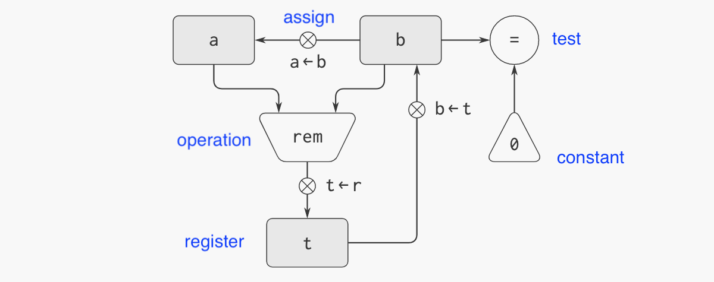
Figure 3.1: Data paths for a GCD machine.
In order for the data paths to actually compute GCDs, the buttons must be pushed in the correct sequence.
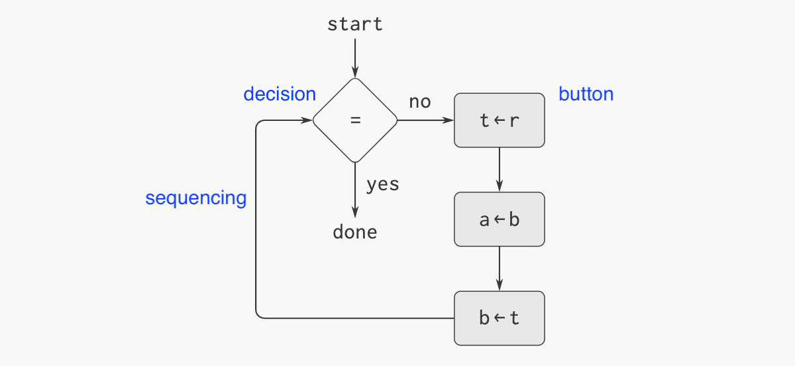
Figure 3.2: Controller for a GCD machine.
Exercise 5.1: Design a register machine to compute factorials using the iterative algorithm specified by the following procedure. Draw data-path and controller diagrams for this machine.
(define (factorial n)
(define (iter product counter)
(if (> counter n)
product
(iter (* counter product)
(+ counter 1))))
(iter 1 1))
Solution
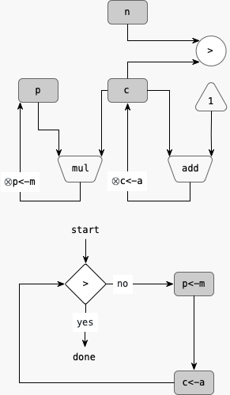
3.1.1 A Language for Describing Register Machines
create a language that presents, in textual form, all the information given by the data-path and controller diagrams. We will start with a notation that directly mirrors the diagrams.
We define the data paths of a machine by describing the registers and the operations.
We define the data paths of a machine by describing the registers and the operations. To describe a register, we give it a name and specify the buttons that control assignment to it. We give each of these buttons a name and specify the source of the data that enters the register under the button’s control. (The source is a register, a constant, or an operation.) To describe an operation, we give it a name and specify its inputs (registers or constants).
(data-paths
(registers
((name a)
(buttons ((name a<-b)
(source (register b)))))
((name b)
(buttons ((name b<-t)
(source (register t)))))
((name t)
(buttons ((name t<-r)
(source (operation rem))))))
(operations
((name rem)
(inputs (register a) (register b)))
((name =)
(inputs (register b) (constant 0)))))
(controller
test-b ; label
(test =) ; test
(branch
(label gcd-done)) ; conditional branch
(t<-r) ; button push
(a<-b) ; button push
(b<-t) ; button push
(goto
(label test-b)) ; unconditional branch
gcd-done) ; label
(controller
test-b
(test (op =) (reg b) (const 0))
(branch (label gcd-done))
(assign t (op rem) (reg a) (reg b))
(assign a (reg b))
(assign b (reg t))
(goto (label test-b))
gcd-done)
Exercise 5.2: Use the register-machine language to describe the iterative factorial machine of Exercise 5.1.
Solution
(data-paths
(registers
((name n))
((name p)
(buttons ((name p<-m)
(source (operation mul)))))
((name c)
(buttons ((name c<-a)
(source (operation add))))))
(operations
((name mul)
(inputs (register c) (register p)))
((name add)
(inputs (register c) (constant 1)))
((name >)
(inputs (register c) (register n)))))
(controller
test-c ; label
(test >) ; test
(branch
(label iter-done)) ; conditional branch
(p<-m) ; button push
(c<-a) ; button push
(goto
(label test-c)) ; unconditional branch
iter-done) ; label
(controller
test-c
(test (op >) (reg c) (reg n))
(branch (label iter-done))
(assign p (op mul) (reg c) (reg p))
(assign c (op add) (reg c) (const 1))
(goto (label test-c))
iter-done)
3.1.2 Actions
modify the GCD machine so that we can type in the numbers whose GCD we want and get the answer printed at our terminal.
We will not discuss how to make a machine that can read and print, but will assume (as we do when we use read and display in Scheme) that they are available as primitive operations.
Read is like the operations we have been using in that it produces a value that can be stored in a register. But read does not take inputs from any registers; its value depends on something that happens outside the parts of the machine we are designing.
Though it has an effect, this effect is not on a part of the machine we are designing. We will refer to this kind of operation as an action.
To make a controller push an action button we use a new kind of instruction called perform.
the action of printing the contents of register a is represented in a controller sequence by the instruction
;; It does not produce an output value to be stored in a
;; register
(perform (op print) (reg a))
;; Different from rem that assigns to register t the value
;; of the rem operation on the contents of registers a and b
(assign t (op rem) (reg a) (reg b))
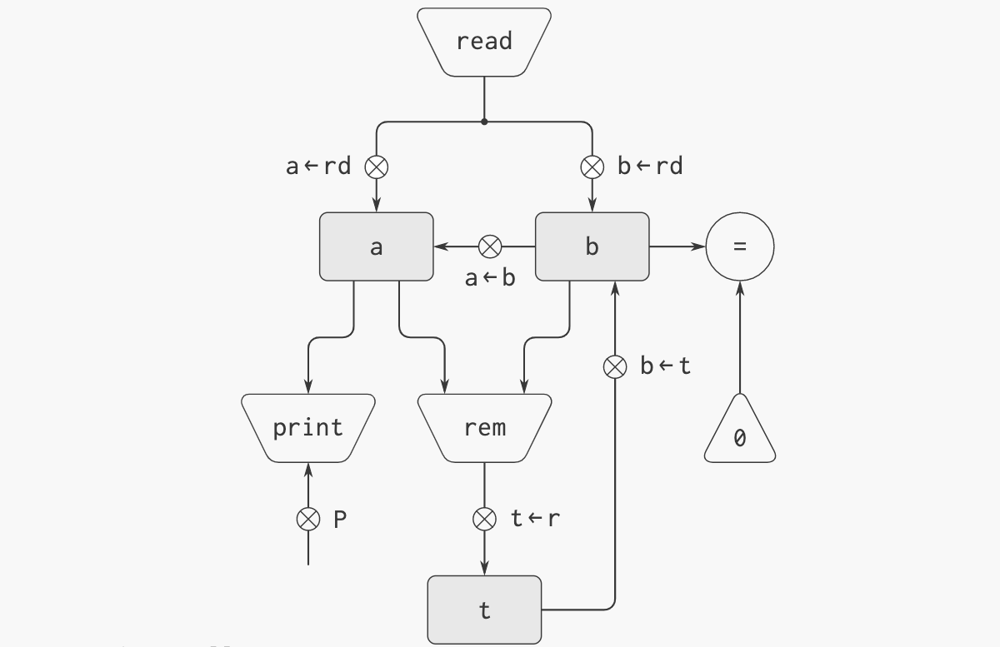
Figure: A GCD machine that reads inputs and prints results.
(controller
gcd-loop
(assign a (op read))
(assign b (op read))
test-b
(test (op =) (reg b) (const 0))
(branch (label gcd-done))
(assign t (op rem) (reg a) (reg b))
(assign a (reg b))
(assign b (reg t))
(goto (label test-b))
gcd-done
(perform (op print) (reg a))
(goto (label gcd-loop)))
3.1.3 Abstraction in Machine Design
We will often define a machine to include “primitive” operations that are actually very complex. The fact that we have swept a lot of complexity under the rug, however, does not mean that a machine design is unrealistic. We can always replace the complex “primitives” by simpler primitive operations.
write a Scheme procedure that finds remainders in this way:
(define (remainder n d)
(if (< n d) n (remainder (- n d) d)))
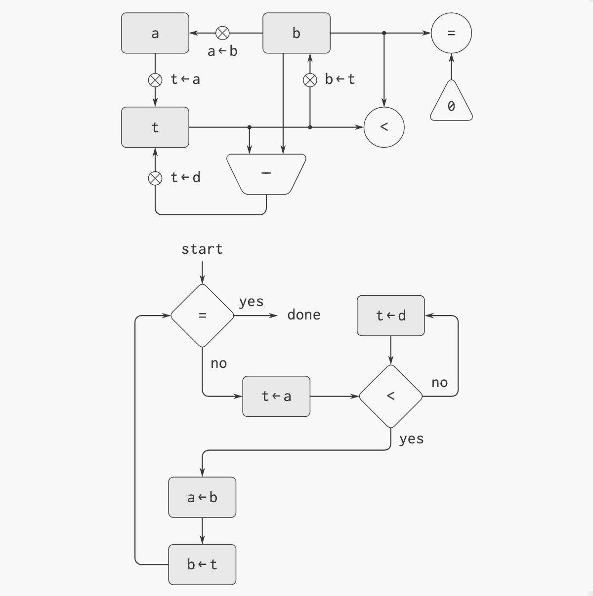
Figure: Data paths and controller for the elaborated GCD machine.
(assign t (op rem) (reg a) (reg b))
in the GCD controller definition is replaced by a sequence of instructions that contains a loop
(controller
test-b
(test (op =) (reg b) (const 0))
(branch (label gcd-done))
(assign t (reg a))
rem-loop
(test (op <) (reg t) (reg b))
(branch (label rem-done))
(assign t (op -) (reg t) (reg b))
(goto (label rem-loop))
rem-done
(assign a (reg b))
(assign b (reg t))
(goto (label test-b))
gcd-done)
Exercise 5.3: Design a machine to compute square roots using Newton’s method, as described in Example Square Roots by Newton's Method:
(define (sqrt x)
(define (good-enough? guess)
(< (abs (- (square guess) x)) 0.001))
(define (improve guess)
(average guess (/ x guess)))
(define (sqrt-iter guess)
(if (good-enough? guess)
guess
(sqrt-iter (improve guess))))
(sqrt-iter 1.0))
Begin by assuming that good-enough? and improve operations are available as primitives. Then show how to expand these in terms of arithmetic operations. Describe each version of the sqrt machine design by drawing a data-path diagram and writing a controller definition in the register-machine language.
Solution
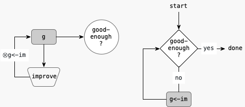
(controller
test-gn
(test (op good-enough?) (reg g))
(branch (label iter-done))
(assign g (op improve) (reg g))
(goto (label test-gn))
iter-done)
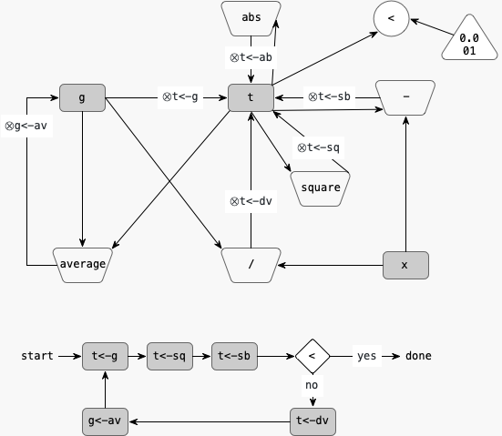
(controller
good-enough
(assign (reg t) (reg g))
(assign (reg t) (op square) (reg t))
(assign (reg t) (op sub) (reg t) (reg x))
(test (op <) (reg t) (const 0.001))
(branch (label iter-done))
(assign (reg t) (op div) (reg x) (reg t))
(assign (reg g) (op average) (reg g) (reg t))
(goto (label good-enough))
iter-done)
3.1.4 Subroutines
A more powerful method for implementing subroutines is to have the continue register hold the label of the entry point in the controller sequence at which execution should continue when the subroutine is finished.
There must be a way to assign to a register a label in the controller sequence in such a way that this value can be fetched from the register and used to continue execution at the designated entry point.
To reflect this ability, we will extend the assign instruction of the register-machine language to allow a register to be assigned as value a label from the controller sequence (as a special kind of constant).
We will also extend the goto instruction to allow execution to continue at the entry point described by the contents of a register rather than only at an entry point described by a constant label.
gcd
(test (op =) (reg b) (const 0))
(branch (label gcd-done))
(assign t (op rem) (reg a) (reg b))
(assign a (reg b))
(assign b (reg t))
(goto (label gcd))
gcd-done
(goto (reg continue))
…
;; Before calling gcd,
;; we assign to continue the label
;; to which gcd should return.
(assign continue (label after-gcd-1))
(goto (label gcd))
after-gcd-1
…
;; Here is the second call to gcd,
;; with a different continuation.
(assign continue (label after-gcd-2))
(goto (label gcd))
after-gcd-2
Sharing is more economical, but we must be careful if we have a subroutine (sub1) that calls another subroutine (sub2).
3.1.5 Using a Stack to Implement Recursion
With the ideas illustrated so far, we can implement any iterative process by specifying a register machine that has a register corresponding to each state variable of the process. The machine repeatedly executes a controller loop, changing the contents of the registers, until some termination condition is satisfied. At each point in the controller sequence, the state of the machine (representing the state of the iterative process) is completely determined by the contents of the registers (the values of the state variables).
Implementing recursive processes, however, requires an additional mechanism.
But there is an important difference between the gcd procedure, which reduces the original computation to a new GCD computation, and factorial, which requires computing another factorial as a subproblem.
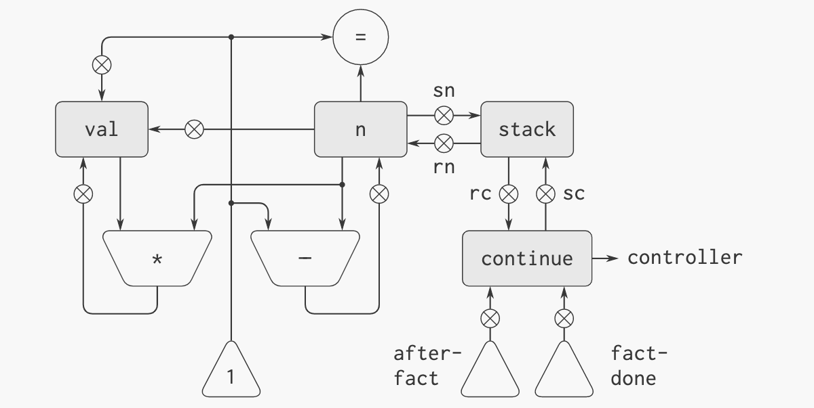
(controller
(assign continue (label fact-done)) ; set up final return address
fact-loop
(test (op =) (reg n) (const 1))
(branch (label base-case))
(save continue) ; Set up for the recursive call
(save n) ; by saving n and continue.
(assign n (op -) (reg n) (const 1)) ; Set up continue so that the
(assign continue (label after-fact)) ; computation will continue
(goto (label fact-loop)) ; at after-fact when the
after-fact ; subroutine returns.
(restore n)
(restore continue)
(assign val (op *) (reg n) (reg val)) ; val now contains n(n - 1)!
(goto (reg continue)) ; return to caller
base-case
(assign val (const 1)) ; base case: 1! = 1
(goto (reg continue)) ; return to caller
fact-done)
Listing 3.1: A recursive factorial machine.
- A double recursion
(define (fib n)
(if (< n 2)
n
(+ (fib (- n 1)) (fib (- n 2)))))
(controller
(assign continue (label fib-done))
fib-loop
(test (op <) (reg n) (const 2))
(branch (label immediate-answer))
;; set up to compute Fib(n − 1)
(save continue)
(assign continue (label afterfib-n-1))
(save n) ; save old value of n
(assign n
(op -)
(reg n)
(const 1)) ; clobber n to n-1
(goto
(label fib-loop)) ; perform recursive call
afterfib-n-1 ; upon return, val contains Fib(n − 1)
(restore n)
(restore continue)
;; set up to compute Fib(n − 2)
(assign n (op -) (reg n) (const 2))
(save continue)
(assign continue (label afterfib-n-2))
(save val) ; save Fib(n − 1)
(goto (label fib-loop))
afterfib-n-2 ; upon return, val contains Fib(n − 2)
(assign n
(reg val)) ; n now contains Fib(n − 2)
(restore val) ; val now contains Fib(n − 1)
(restore continue)
(assign val ; Fib(n − 1) + Fib(n − 2)
(op +)
(reg val)
(reg n))
(goto ; return to caller,
(reg continue)) ; answer is in val
immediate-answer
(assign val
(reg n)) ; base case: Fib(n) = n
(goto (reg continue))
fib-done)
Listing 3.2: Controller for a machine to compute Fibonacci numbers.
Exercise 5.4: Specify register machines that implement each of the following procedures. For each machine, write a controller instruction sequence and draw a diagram showing the data paths.
- Recursive exponentiation:
(define (expt b n)
(if (= n 0)
1
(* b (expt b (- n 1)))))
- Iterative exponentiation:
(define (expt b n)
(define (expt-iter counter product)
(if (= counter 0)
product
(expt-iter (- counter 1)
(* b product))))
(expt-iter n 1))
Solution
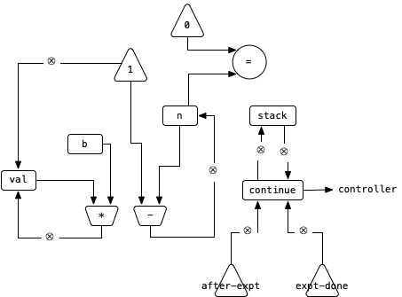
(controller
(assign continue (label expt-done))
expt-loop
(test (op =) (reg n) (const 0))
(branch (label base-case))
(save continue)
(assign n (op -) (reg n) (const 1))
(assign continue (label after-expt))
(goto (label expt-loop))
after-expt
(restore continue)
(assign val (op *) (reg val) (reg b))
(goto (reg continue))
base-case
(assign val (const 1))
(goto (reg continue))
expt-done)
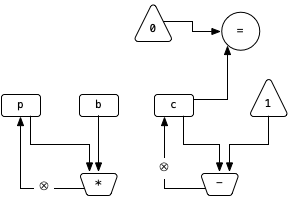
(controller
test-c
(test (reg c) (const 0))
(branch (label iter-done))
(assign (reg c) (op -) (reg c) (const 1))
(assign (reg p) (op *) (reg b) (reg p))
(goto (label test-c))
iter-done)
Exercise 5.5: Hand-simulate the factorial and Fibonacci machines, using some nontrivial input (requiring execution of at least one recursive call). Show the contents of the stack at each significant point in the execution.
Solution
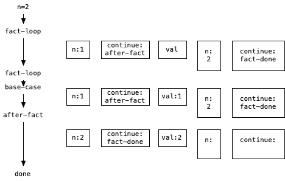
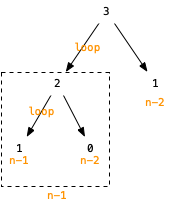
(controller
(assign continue (label fib-done)) ; 1
fib-loop
(test (op <) (reg n) (const 2))
(branch (label immediate-answer))
(save continue) ; 2 6
(assign continue (label afterfib-n-1)) ; 3 7
(save n) ; 4 8
(assign n (op -) (reg n) (const 1)) ; 5 9
(goto (label fib-loop))
afterfib-n-1
(restore n) ; 11 20
(assign n (op -) (reg n) (const 2)) ; 12 21
(assign continue (label afterfib-n-2)) ; 13 22
(save val) ; 14 23
(goto (label fib-loop))
afterfib-n-2
(assign n (reg val)) ; 16 25
(restore val) ; 17 26
(restore continue) ; 18 27
(assign val (op +) (reg val) (reg n)) ; 19 28
(goto (reg continue))
immediate-answer
(assign val (reg n)) ; 10 15 24
(goto (reg continue))
fib-done)
| step | label | n | val | continue | stack |
|---|
| 1 | | 3 | | done | |
| 2 | loop | 3 | | done | done |
| 3 | | 3 | | n-1 | done |
| 4 | | 3 | | n-1 | done n:3 |
| 5 | | 2 | | n-1 | done n:3 |
| 6 | loop | 2 | | n-1 | done n:3 n-1 |
| 7 | | 2 | | n-1 | done n:3 n-1 |
| 8 | | 2 | | n-1 | done n:3 n-1 n:2 |
| 9 | | 1 | | n-1 | done n:3 n-1 n:2 |
| 10 | im | 1 | 1 | n-1 | done n:3 n-1 n:2 |
| 11 | n-1 | 2 | 1 | n-1 | done n:3 n-1 |
| 12 | | 0 | 1 | n-1 | done n:3 n-1 |
| 13 | | 0 | 1 | n-2 | done n:3 n-1 |
| 14 | | 0 | 1 | n-2 | done n:3 n-1 v:1 |
| 15 | im | 0 | 0 | n-2 | done n:3 n-1 v:1 |
| 16 | n-2 | 0 | 0 | n-2 | done n:3 n-1 v:1 |
| 17 | | 0 | 1 | n-2 | done n:3 n-1 |
| 18 | | 0 | 1 | n-1 | done n:3 |
| 19 | | 0 | 1 | n-1 | done n:3 |
| 20 | n-1 | 3 | 1 | n-1 | done |
| 21 | | 1 | 1 | n-1 | done |
| 22 | | 1 | 1 | n-2 | done |
| 23 | | 1 | 1 | n-2 | done v:1 |
| 24 | im | 1 | 1 | n-2 | done v:1 |
| 25 | n-2 | 1 | 1 | n-2 | done v:1 |
| 26 | | 1 | 1 | n-2 | done |
| 27 | | 1 | 1 | done | |
| 28 | | 1 | 2 | done | |
Exercise 5.6: Ben Bitdiddle observes that the Fibonacci machine’s controller sequence has an extra save and an extra restore, which can be removed to make a faster machine. Where are these instructions?
Solution
afterfib-n-1 ; upon return, val contains Fib(n − 1)
(restore n)
;; (restore continue) ; this can be removed
;; set up to compute Fib(n − 2)
(assign n (op -) (reg n) (const 2))
(save continue)
(assign continue (label afterfib-n-2))
(save val) ; save Fib(n − 1)
(goto (label fib-loop))
3.1.6 Instruction Summary
3.2 A Register-Machine Simulator
(define gcd-machine
(make-machine
'(a b t)
(list (list 'rem remainder) (list '= =))
'(test-b
(test (op =) (reg b) (const 0))
(branch (label gcd-done))
(assign t (op rem) (reg a) (reg b))
(assign a (reg b)) (assign b (reg t))
(goto (label test-b))
gcd-done)))
<<common>>
<<machine>>
<<assemble>>
<<execution-procedure>>
<<gcd-machine>>
(set-register-contents! gcd-machine 'a 12)
(set-register-contents! gcd-machine 'b 8)
(gcd-machine 'start)
(p (get-register-contents gcd-machine 'a))
Exercise 5.7: Use the simulator to test the machines you designed in Exercise 54.
Solution
3.2.1 The Machine Model
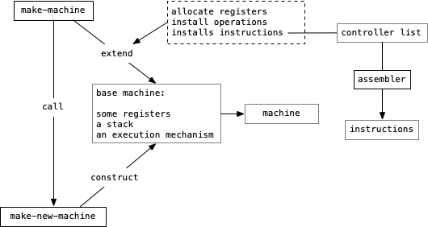
(define (make-machine register-names ops controller-text)
(let ((machine (make-new-machine)))
(for-each (lambda (register-name)
((machine 'allocate-register)
register-name))
register-names)
((machine 'install-operations) ops)
((machine 'install-instruction-sequence)
(assemble controller-text machine))
machine))
;;; Register
(define (make-register name)
(let ((contents '*unassigned*))
(define (dispatch message)
(cond ((eq? message 'get) contents)
((eq? message 'set)
(lambda (value)
(set! contents value)))
(else
(error "Unknown request: REGISTER" message))))
dispatch))
(define (get-contents register) (register 'get))
(define (set-contents! register value) ((register 'set) value))
;;; Stack
(define (make-stack)
(let ((s '()))
(define (push x)
(set! s (cons x s)))
(define (pop)
(if (null? s)
(error "Empty stack: POP")
(let ((top (car s)))
(set! s (cdr s))
top)))
(define (initialize)
(set! s '())
'done)
(define (dispatch message)
(cond ((eq? message 'push) push)
((eq? message 'pop) (pop))
((eq? message 'initialize)
(initialize))
(else
(error "Unknown request: STACK" message))))
dispatch))
(define (pop stack) (stack 'pop))
(define (push stack value) ((stack 'push) value))
;; +----------------------------------------
;; | stack:()
;; | the-instruction-sequence:()
;; | the-ops:(('initialize-stack λ))
;; | register-table:(('pc pc) ('flag flag))
;; |
;;; The basic machine
(define (make-new-machine)
(let ((pc (make-register 'pc))
(flag (make-register 'flag))
(stack (make-stack))
(the-instruction-sequence '()))
(let ((the-ops
(list (list 'initialize-stack
(lambda () (stack 'initialize)))))
(register-table
(list (list 'pc pc)
(list 'flag flag))))
(define (allocate-register name)
(if (assoc name register-table)
(error "Multiply defined register: " name)
(set! register-table
(cons (list name (make-register name))
register-table)))
'register-allocated)
(define (lookup-register name)
(let ((val (assoc name register-table)))
(if val
(cadr val)
(error "Unknown register:" name))))
(define (execute)
(let ((insts (get-contents pc)))
(if (null? insts)
'done
(begin
((instruction-execution-proc (car insts)))
(execute)))))
(define (dispatch message)
(cond ((eq? message 'start)
(set-contents! pc the-instruction-sequence)
(execute))
((eq? message 'install-instruction-sequence)
(lambda (seq)
(set! the-instruction-sequence seq)))
((eq? message 'allocate-register)
allocate-register)
((eq? message 'get-register)
lookup-register)
((eq? message 'install-operations)
(lambda (ops)
(set! the-ops (append the-ops ops))))
((eq? message 'stack) stack)
((eq? message 'operations) the-ops)
((eq? message 'debug)
(list (list "stack: "stack)
(list "ins: " the-instruction-sequence)
(list "ops: " the-ops)
(list "register table: "register-table)))
(else (error "Unknown request: MACHINE" message))))
dispatch)))
;;; interface
(define (start machine)
(machine 'start))
(define (get-register-contents
machine register-name)
(get-contents
(get-register machine register-name)))
(define (set-register-contents!
machine register-name value)
(set-contents!
(get-register machine register-name)
value)
'done)
(define (get-register machine reg-name)
((machine 'get-register) reg-name))
3.2.2 The Assembler
(define (assemble controller-text machine)
(extract-labels
controller-text
(lambda (insts labels)
(update-insts! insts labels machine)
insts)))
;; build the initial instruction list and label table from the
;; supplied controller text.
(define (extract-labels text receive)
(if (null? text)
(receive '() '())
(extract-labels
(cdr text)
(lambda (insts labels)
(let ((next-inst (car text)))
(if (symbol? next-inst)
(receive
insts
(cons (make-label-entry next-inst insts)
labels))
(receive
(cons (make-instruction next-inst)
insts)
labels)))))))
(define (update-insts! insts labels machine)
(let ((pc (get-register machine 'pc))
(flag (get-register machine 'flag))
(stack (machine 'stack))
(ops (machine 'operations)))
(for-each
(lambda (inst)
(set-instruction-execution-proc!
inst
(make-execution-procedure
(instruction-text inst)
labels machine pc flag stack ops)))
insts)))
(define (make-instruction text)
(cons text '()))
(define (instruction-text inst)
(car inst))
(define (instruction-execution-proc inst)
(cdr inst))
(define (set-instruction-execution-proc! inst proc)
(set-cdr! inst proc))
(define (make-label-entry label-name insts)
(cons label-name insts))
(define (lookup-label labels label-name)
(let ((val (assoc label-name labels)))
(if val
(cdr val)
(error "Undefined label: ASSEMBLE"
label-name))))
Exercise 5.8: The following register-machine code is ambiguous, because the label here is defined more than once:
start
(goto (label here))
here
(assign a (const 3))
(goto (label there))
here
(assign a (const 4))
(goto (label there))
there
With the simulator as written, what will the contents of register a be when control reaches there? Modify the extract-labels procedure so that the assembler will signal an error if the same label name is used to indicate two different locations.
Solution
Contents of register a will be 3.
(define (extract-labels text receive)
(if (null? text)
(receive '() '())
(extract-labels
(cdr text)
(lambda (insts labels)
(let ((next-inst (car text)))
(if (symbol? next-inst)
(if (assoc next-inst labels)
(error "Duplicated label: ASSEMBLE"
next-inst)
(receive
insts
(cons (make-label-entry next-inst insts)
labels)))
(receive
(cons (make-instruction next-inst)
insts)
labels)))))))
3.2.3 Generating Execution Procedures for Instructions
(define (make-execution-procedure
inst labels machine pc flag stack ops)
(cond ((eq? (car inst) 'assign)
(make-assign
inst machine labels ops pc))
((eq? (car inst) 'test)
(make-test
inst machine labels ops flag pc))
((eq? (car inst) 'branch)
(make-branch
inst machine labels flag pc))
((eq? (car inst) 'goto)
(make-goto inst machine labels pc))
((eq? (car inst) 'save)
(make-save inst machine stack pc))
((eq? (car inst) 'restore)
(make-restore inst machine stack pc))
((eq? (car inst) 'perform)
(make-perform
inst machine labels ops pc))
(else (error "Unknown instruction
type: ASSEMBLE"
inst))))
;;; Assign instructions
(define (make-assign
inst machine labels operations pc)
(let ((target
(get-register
machine
(assign-reg-name inst)))
(value-exp (assign-value-exp inst)))
(let ((value-proc
(if (operation-exp? value-exp)
(make-operation-exp
value-exp
machine
labels
operations)
(make-primitive-exp
(car value-exp)
machine
labels))))
(lambda () ; execution procedure for assign
(set-contents! target (value-proc))
(advance-pc pc)))))
(define (assign-reg-name assign-instruction)
(cadr assign-instruction))
(define (assign-value-exp assign-instruction)
(cddr assign-instruction))
(define (advance-pc pc)
(set-contents! pc (cdr (get-contents pc))))
;;; Test, branch, and goto instructions
(define (make-test
inst machine labels operations flag pc)
(let ((condition (test-condition inst)))
(if (operation-exp? condition)
(let ((condition-proc
(make-operation-exp
condition
machine
labels
operations)))
(lambda ()
(set-contents! flag (condition-proc))
(advance-pc pc)))
(error "Bad TEST instruction:
ASSEMBLE" inst))))
(define (test-condition test-instruction)
(cdr test-instruction))
(define (make-branch
inst machine labels flag pc)
(let ((dest (branch-dest inst)))
(if (label-exp? dest)
(let ((insts
(lookup-label
labels
(label-exp-label dest))))
(lambda ()
(if (get-contents flag)
(set-contents! pc insts)
(advance-pc pc))))
(error "Bad BRANCH instruction:
ASSEMBLE"
inst))))
(define (branch-dest branch-instruction)
(cadr branch-instruction))
(define (make-goto inst machine labels pc)
(let ((dest (goto-dest inst)))
(cond ((label-exp? dest)
(let ((insts
(lookup-label
labels
(label-exp-label dest))))
(lambda ()
(set-contents! pc insts))))
((register-exp? dest)
(let ((reg
(get-register
machine
(register-exp-reg dest))))
(lambda ()
(set-contents!
pc
(get-contents reg)))))
(else (error "Bad GOTO instruction:
ASSEMBLE"
inst)))))
(define (goto-dest goto-instruction)
(cadr goto-instruction))
;;; Other instructions
(define (make-save inst machine stack pc)
(let ((reg (get-register
machine
(stack-inst-reg-name inst))))
(lambda ()
(push stack (get-contents reg))
(advance-pc pc))))
(define (make-restore inst machine stack pc)
(let ((reg (get-register
machine
(stack-inst-reg-name inst))))
(lambda ()
(set-contents! reg (pop stack))
(advance-pc pc))))
(define (stack-inst-reg-name
stack-instruction)
(cadr stack-instruction))
(define (make-perform
inst machine labels operations pc)
(let ((action (perform-action inst)))
(if (operation-exp? action)
(let ((action-proc
(make-operation-exp
action
machine
labels
operations)))
(lambda ()
(action-proc)
(advance-pc pc)))
(error "Bad PERFORM instruction:
ASSEMBLE"
inst))))
(define (perform-action inst) (cdr inst))
;;; Execution procedures for subexpressions
(define (make-primitive-exp exp machine labels)
(cond ((constant-exp? exp)
(let ((c (constant-exp-value exp)))
(lambda () c)))
((label-exp? exp)
(let ((insts
(lookup-label
labels
(label-exp-label exp))))
(lambda () insts)))
((register-exp? exp)
(let ((r (get-register
machine
(register-exp-reg exp))))
(lambda () (get-contents r))))
(else (error "Unknown expression type:
ASSEMBLE"
exp))))
(define (register-exp? exp)
(tagged-list? exp 'reg))
(define (register-exp-reg exp)
(cadr exp))
(define (constant-exp? exp)
(tagged-list? exp 'const))
(define (constant-exp-value exp)
(cadr exp))
(define (label-exp? exp)
(tagged-list? exp 'label))
(define (label-exp-label exp)
(cadr exp))
(define (make-operation-exp
exp machine labels operations)
(let ((op (lookup-prim
(operation-exp-op exp)
operations))
(aprocs
(map (lambda (e)
(make-primitive-exp
e machine labels))
(operation-exp-operands exp))))
(lambda () (apply op (map (lambda (p) (p))
aprocs)))))
(define (operation-exp? exp)
(and (pair? exp)
(tagged-list? (car exp) 'op)))
(define (operation-exp-op operation-exp)
(cadr (car operation-exp)))
(define (operation-exp-operands operation-exp)
(cdr operation-exp))
(define (lookup-prim symbol operations)
(let ((val (assoc symbol operations)))
(if val
(cadr val)
(error "Unknown operation: ASSEMBLE"
symbol))))
Listing 3.6: execution-procedure
Exercise 5.9: The treatment of machine operations above permits them to operate on labels as well as on constants and the contents of registers. Modify the expression-processing procedures to enforce the condition that operations can be used only with registers and constants.
Solution
(define (make-operation-exp
exp machine labels operations)
(let ((op (lookup-prim
(operation-exp-op exp)
operations))
(aprocs
(map (lambda (e)
(if (or (register-exp? e)
(constant-exp? e))
(make-primitive-exp e machine labels)
(error "Only registers and constants
are permitted: ASSEMBLE"
e))
(operation-exp-operands exp))))
(lambda () (apply op (map (lambda (p) (p))
aprocs)))))
Exercise 5.10: Design a new syntax for register-machine instructions and modify the simulator to use your new syntax. Can you implement your new syntax without changing any part of the simulator except the syntax procedures in this section?
Solution
Exercise 5.11: When we introduced save and restore in Using a Stack to Implement Recursion, we didn’t specify what would happen if you tried to restore a register that was not the last one saved, as in the sequence
(save y)
(save x)
(restore y)
There are several reasonable possibilities for the meaning of restore:
-
(restore y) puts into y the last value saved on the stack, regardless of what register that value came from. This is the way our simulator behaves. Show how to take advantage of this behavior to eliminate one instruction from the Fibonacci machine of Using a Stack to Implement Recursion (Listing 3.2).
-
(restore y) puts into y the last value saved on the stack, but only if that value was saved from y; otherwise, it signals an error. Modify the simulator to behave this way. You will have to change save to put the register name on the stack along with the value.
-
(restore y) puts into y the last value saved from y regardless of what other registers were saved after y and not restored. Modify the simulator to behave this way. You will have to associate a separate stack with each register. You should make the initialize-stack operation initialize all the register stacks.
Solution
- See Exercise 55 solution.
afterfib-n-2
;; (assign n (reg val))
;; (restore val)
(restore n)
(restore continue)
-
(define (make-save inst machine stack pc)
(let ((reg-name (stack-inst-reg-name inst)))
(let ((reg (get-register machine reg-name)))
(lambda ()
(push stack (cons reg-name (get-contents reg)))
(advance-pc pc)))))
(define (make-restore inst machine stack pc)
(let ((reg-name (stack-inst-reg-name inst)))
(let ((reg (get-register machine reg-name)))
(lambda ()
(let ((x (pop stack)))
(if (eq? (car x) reg-name)
(set-contents! reg (cdr x))
(error "Value wasn't saved from"
reg-name v))
(advance-pc pc))))))
-
(define (make-stack-table)
(let ((st '()))
(define (push k x)
(let (s (assoc k st))
(if s
((s 'push) x)
(set! st (cons (list k (((make-stack) 'push) x))
st)))))
(define (pop k)
(let (s (assoc k st))
(if s
(if (null? s)
(error "Empty stack: POP")
(let ((top (car s)))
(set! s (cdr s))
top))
(error "No such key: POP"))))
(define (initialize)
(set! s '())
'done)
(define (dispatch message)
(cond ((eq? message 'push) push)
((eq? message 'pop) (pop))
((eq? message 'initialize)
(initialize))
(else
(error "Unknown request: STACK"
message))))
dispatch))
(define (pop-st stack key) ((stack 'pop) key))
(define (push-st stack key value) ((stack 'push) key value))
(define (make-new-machine)
(let ((pc (make-register 'pc))
(flag (make-register 'flag))
(stack (make-stack-table))
(the-instruction-sequence '()))
(let ((the-ops
(list
(list 'initialize-stack
(lambda ()
(stack 'initialize)))))
(register-table
(list (list 'pc pc)
(list 'flag flag)))
(stack-table '())
(define (allocate-register name)
(if (assoc name register-table)
(error
"Multiply defined register: "
name)
(set! register-table
(cons
(list name
(make-register name))
register-table)))
'register-allocated)
(define (lookup-register name)
(let ((val
(assoc name register-table)))
(if val
(cadr val)
(error "Unknown register:"
name))))
(define (execute)
(let ((insts (get-contents pc)))
(if (null? insts)
'done
(begin
((instruction-execution-proc
(car insts)))
(execute)))))
(define (dispatch message)
(cond ((eq? message 'start)
(set-contents!
pc
the-instruction-sequence)
(execute))
((eq?
message
'install-instruction-sequence)
(lambda (seq)
(set!
the-instruction-sequence
seq)))
((eq? message
'allocate-register)
allocate-register)
((eq? message 'get-register)
lookup-register)
((eq? message
'install-operations)
(lambda (ops)
(set! the-ops
(append the-ops ops))))
((eq? message 'stack) stack)
((eq? message 'operations)
the-ops)
(else (error "Unknown request:
MACHINE"
message))))
dispatch)))
Exercise 5.12: The simulator can be used to help determine the data paths required for implementing a machine with a given controller. Extend the assembler to store the following information in the machine model:
- a list of all instructions, with duplicates removed, sorted by instruction type (
assign, goto, and so on);
- a list (without duplicates) of the registers used to hold entry points (these are the registers referenced by
goto instructions);
- a list (without duplicates) of the registers that are
saved or restored;
- for each register, a list (without duplicates) of the sources from which it is assigned (for example, the sources for register
val in the factorial machine of Listing 3.1 are (const 1) and ((op *) (reg n) (reg val))).
Extend the message-passing interface to the machine to provide access to this new information. To test your analyzer, define the Fibonacci machine from Listing 3.2 and examine the lists you constructed.
Solution
(define (unique-add seq x)
(define (unique? seq)
(cond ((null? seq) ture)
((eq? (car seq) x) false)
(unique? (cdr seq))))
(if (unique? seq)
(cons x seq)
seq))
(define (make-data-path)
(let ((d (list 'instructions '())))
(define (add-inst type inst)
(let ((type-insts (assoc 'instructions d)))
(if type-insts
(let ((insts (assoc type type-insts)))
(set! insts (unique-add insts inst)))
(set! type-insts
(list (list type (list inst)))))))
(lambda (message)
(cond ((eq? message 'add-inst add-inst))
((eq? message 'instructions (assoc 'instructions d)))))))
(define (make-new-machine)
(let ((pc (make-register 'pc))
(flag (make-register 'flag))
(stack (make-stack))
(the-instruction-sequence '())
(data-path (make-data-path)))
(let ((the-ops
(list (list 'initialize-stack
(lambda () (stack 'initialize)))))
(register-table
(list (list 'pc pc)
(list 'flag flag))))
(define (allocate-register name)
(if (assoc name register-table)
(error "Multiply defined register: " name)
(set! register-table
(cons (list name (make-register name))
register-table)))
'register-allocated)
(define (lookup-register name)
(let ((val (assoc name register-table)))
(if val
(cadr val)
(error "Unknown register:" name))))
(define (execute)
(let ((insts (get-contents pc)))
(if (null? insts)
'done
(begin
((instruction-execution-proc (car insts)))
(execute)))))
(define (dispatch message)
(cond ((eq? message 'start)
(set-contents! pc the-instruction-sequence)
(execute))
((eq? message 'install-instruction-sequence)
(lambda (seq)
(set! the-instruction-sequence seq)))
((eq? message 'allocate-register)
allocate-register)
((eq? message 'get-register)
lookup-register)
((eq? message 'install-operations)
(lambda (ops)
(set! the-ops (append the-ops ops))))
((eq? message 'stack) stack)
((eq? message 'operations) the-ops)
((eq? message 'data-path) data-path)
(else (error "Unknown request: MACHINE" message))))
dispatch)))
(define (make-assign
inst machine labels operations pc)
(((machine 'data-path) 'add-inst) 'assign inst)
(let ((target
(get-register
machine
(assign-reg-name inst)))
(value-exp (assign-value-exp inst)))
(let ((value-proc
(if (operation-exp? value-exp)
(make-operation-exp
value-exp
machine
labels
operations)
(make-primitive-exp
(car value-exp)
machine
labels))))
(lambda () ; execution procedure for assign
(set-contents! target (value-proc))
(advance-pc pc)))))
Listing 3.7: exercise-5-12
(define insts
'((assign continue (label fib-done))
fib-loop
(test (op <) (reg n) (const 2))
(branch (label immediate-answer))
(save continue)
(assign continue (label afterfib-n-1))
(save n)
(assign n (op -) (reg n) (const 1))
(goto (label fib-loop))
afterfib-n-1
(restore n)
(assign n (op -) (reg n) (const 2))
(assign continue (label afterfib-n-2))
(save val)
(goto (label fib-loop))
afterfib-n-2
(assign n (reg val))
(restore val)
(restore continue)
(assign val (op +) (reg val) (reg n))
(goto (reg continue))
immediate-answer
(assign val (reg n))
(goto (reg continue))
fib-done))
(define fib-machine
(make-machine
'(n val continue)
(list (list '< <) (list '- -) (list '+ +))
insts))
<<common>>
<<machine>>
<<assemble>>
<<execution-procedure>>
;; <<exercise-5-12>>
<<fib-machine>>
(set-register-contents! fib-machine 'n 6)
(fib-machine 'start)
(p (get-register-contents fib-machine 'val))
Exercise 5.13: Modify the simulator so that it uses the controller sequence to determine what registers the machine has rather than requiring a list of registers as an argument to make-machine. Instead of pre-allocating the registers in make-machine, you can allocate them one at a time when they are first seen during assembly of the instructions.
Solution
3.2.4 Monitoring Machine Performance
Appendix A Foreward
- How the program behaves in society?
Educators, generals, dieticians, psychologists, and parents program. Armies, students, and some societies are programmed.
- What does matter in program?
It doesn’t matter much what the programs are about or what applications they serve. What does matter is how well they perform and how smoothly they fit with other programs in the creation of still greater programs.
- What are the three foci of phenomena with which our traffic with the subject matter of this book involves us?
The human mind, collections of computer programs, and the computer.
- Why does program continually evolve?
Every computer program is a model, hatched in the mind, of a real or mental process. These processes, arising from human experience and thought, are huge in number, intricate in detail, and at any time only partially understood. They are modeled to our permanent satisfaction rarely by our computer programs. Thus even though our programs are carefully handcrafted discrete collections of symbols, mosaics of interlocking functions, they continually evolve: we change them as our perception of the model deepens, enlarges, generalizes until the model ultimately attains a metastable place within still another model with which we struggle.
- What is the role of the organizational technique?
Understanding these techniques is essential to participation in the Promethean enterprise called programming. More than anything else, the uncovering and mastery of powerful organizational techniques accelerates our ability to create large, significant programs.
- Why?
Computer programs must be correct, and what we wish to say must be said accurately in every detail. As in every other symbolic activity, we become convinced of program truth through argument. Lisp itself can be assigned a semantics (another model, by the way), and if a program’s function can be specified, say, in the predicate calculus, the proof methods of logic can be used to make an acceptable correctness argument. Unfortunately, as programs get large and complicated, as they almost always do, the adequacy, consistency, and correctness of the specifications themselves become open to doubt, so that complete formal arguments of correctness seldom accompany large programs. Since large programs grow from small ones, it is crucial that we develop an arsenal of standard program structures of whose correctness we have become sure—we call them idioms—and learn to combine them into larger structures using organizational techniques of proven value.
- What’s the relationship between hardware and program?
In any event, hardware always operates at a level more primitive than that at which we care to program. The processes that transform our Lisp programs to “machine” programs are themselves abstract models which we program. Their study and creation give a great deal of insight into the organizational programs associated with programming arbitrary models.
- What are the consequences of breakthrough in hardware technology?
The computers are never large enough or fast enough. Each breakthrough in hardware technology leads to more massive programming enterprises, new organizational principles, and an enrichment of abstract models.
- What does the algorithm care about?
Execution time and data storage requirements.
- What are the characteristics of the list in Lisp?
The simple structure and natural applicability of lists are reflected in functions that are amazingly nonidiosyncratic.
- What is the role of parsing technology in Lisp programs?
In any very large programming task a useful organizing principle is to control and isolate traffic within the task modules via the invention of language. These languages tend to become less primitive as one approaches the boundaries of the system where we humans interact most often. As a result, such systems contain complex language-processing functions replicated many times. Lisp has such a simple syntax and semantics that parsing can be treated as an elementary task. Thus parsing technology plays almost no role in Lisp programs, and the construction of language processors is rarely an impediment to the rate of growth and change of large Lisp systems. Finally, it is this very simplicity of syntax and semantics that is responsible for the burden and freedom borne by all Lisp programmers. No Lisp program of any size beyond a few lines can be written without being saturated with discretionary functions. Invent and fit; have fits and reinvent!
- What concerns does the design of this introductory computer-science subject reflect?
First, we want to establish the idea that a computer language is not just a way of getting a computer to perform operations but rather that it is a novel formal medium for expressing ideas about methodology. Thus, programs must be written for people to read, and only incidentally for machines to execute. Second, we believe that the essential material to be addressed by a subject at this level is not the syntax of particular programming-language constructs, nor clever algorithms for computing particular functions efficiently, nor even the mathematical analysis of algorithms and the foundations of computing, but rather the techniques used to control the intellectual complexity of large software systems.
- What is the goal of this subject?
Our goal is that students who complete this subject should have a good feel for the elements of style and the aesthetics of programming. They should have command of the major techniques for controlling complexity in a large system. They should be capable of reading a 50-page-long program, if it is written in an exemplary style. They should know what not to read, and what they need not understand at any moment. They should feel secure about modifying a program, retaining the spirit and style of the original author.
- What are the ways to control complexity?
These skills are by no means unique to computer programming. The techniques we teach and draw upon are common to all of engineering design. We control complexity by building abstractions that hide details when appropriate. We control complexity by establishing conventional interfaces that enable us to construct systems by combining standard, well-understood pieces in a “mix and match” way. We control complexity by establishing new languages for describing a design, each of which emphasizes particular aspects of the design and deemphasizes others.
- What is the conviction underlying our approach to this subject?
“Computer science” is not a science and that its significance has little to do with computers. The computer revolution is a revolution in the way we think and in the way we express what we think. The essence of this change is the emergence of what might best be called procedural epistemology—the study of the structure of knowledge from an imperative point of view, as opposed to the more declarative point of view taken by classical mathematical subjects. Mathematics provides a framework for dealing precisely with notions of “what is.” Computation provides a framework for dealing precisely with notions of “how to.”
Appendix B Common code
(define true #t)
(define false #f)
(define nil '())
(define (p x) (newline) (display x) x)
(define (average x y) (/ (+ x y) 2))
(define (square x) (* x x))
(define (cube x) (* x x x))
(define (identity x) x)
(define (add-one x) (+ x 1))
(define (sub-one x) (- x 1))
(define (tagged-list? exp tag)
(if (pair? exp)
(eq? (car exp) tag)
false))
(define (assoc key records)
(cond ((null? records) false)
((equal? key (caar records))
(car records))
(else (assoc key (cdr records)))))
#lang sicp
(#%require sicp-pict)
<<common>>
<<sum>>
<<definite-integral>>
(define (r x)
(let ((a 3)
(b 0.26)
(c -0.008))
(+ a (* b x) (* c (square x)))))
(define (area x)
(* 3.14159 (square (r x))))
(p (integral area 0 10 0.001))
C Main Index
D Procedure Index
E Exercise Index